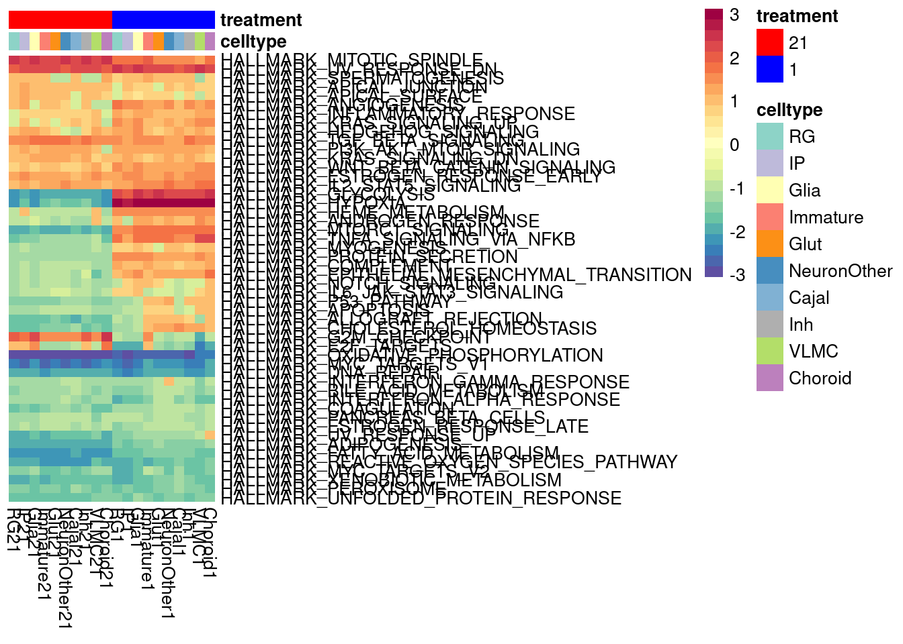
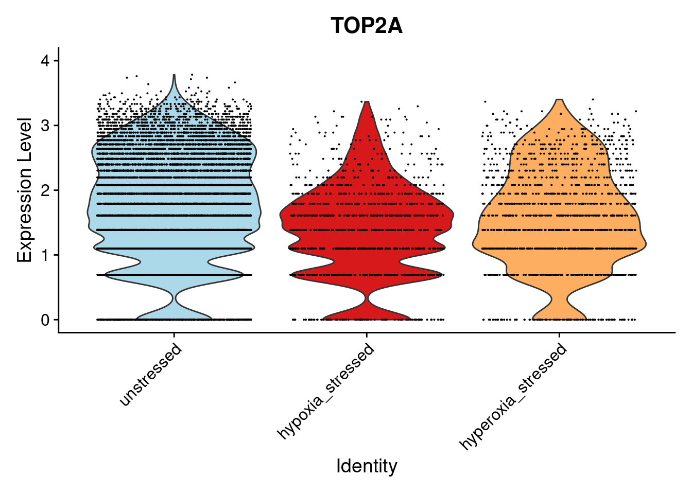
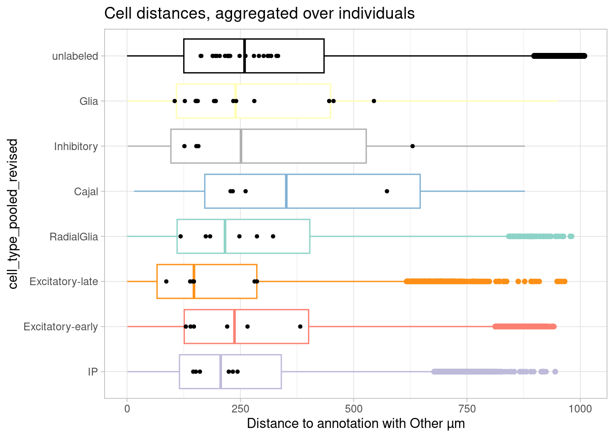

figure2
Ben Umans
2024-07-29
Last updated: 2024-08-30
Checks: 5 2
Knit directory: oxygen_eqtl/
This reproducible R Markdown analysis was created with workflowr (version 1.7.0). The Checks tab describes the reproducibility checks that were applied when the results were created. The Past versions tab lists the development history.
The R Markdown is untracked by Git. To know which version of the R
Markdown file created these results, you’ll want to first commit it to
the Git repo. If you’re still working on the analysis, you can ignore
this warning. When you’re finished, you can run
wflow_publish to commit the R Markdown file and build the
HTML.
Great job! The global environment was empty. Objects defined in the global environment can affect the analysis in your R Markdown file in unknown ways. For reproduciblity it’s best to always run the code in an empty environment.
The command set.seed(20220621) was run prior to running
the code in the R Markdown file. Setting a seed ensures that any results
that rely on randomness, e.g. subsampling or permutations, are
reproducible.
Great job! Recording the operating system, R version, and package versions is critical for reproducibility.
Nice! There were no cached chunks for this analysis, so you can be confident that you successfully produced the results during this run.
Using absolute paths to the files within your workflowr project makes it difficult for you and others to run your code on a different machine. Change the absolute path(s) below to the suggested relative path(s) to make your code more reproducible.
| absolute | relative |
|---|---|
| /project2/gilad/umans/oxygen_eqtl/output/de_results_combinedcoarse_filtered_reharmonize_20240305.RDS | output/de_results_combinedcoarse_filtered_reharmonize_20240305.RDS |
| /project2/gilad/umans/oxygen_eqtl/output/de_results_combinedfine_filtered_reharmonize_20240305.RDS | output/de_results_combinedfine_filtered_reharmonize_20240305.RDS |
| /project2/gilad/umans/oxygen_eqtl/output/de_results_pseudoall_filtered_20231107.RDS | output/de_results_pseudoall_filtered_20231107.RDS |
| /project2/gilad/umans/oxygen_eqtl/output/de_results_combinedfine_filtered_reharmonize_for_mash_20240731.RDS | output/de_results_combinedfine_filtered_reharmonize_for_mash_20240731.RDS |
| /project2/gilad/umans/oxygen_eqtl/output/de_results_combinedcoarse_filtered_reharmonize_for_mash_20240731.RDS | output/de_results_combinedcoarse_filtered_reharmonize_for_mash_20240731.RDS |
| /project2/gilad/umans/oxygen_eqtl/output/fgsea/ | output/fgsea |
| /project2/gilad/umans/oxygen_eqtl/output/de_results_combinedfine_filtered_reharmonize_censored_20240802.RDS | output/de_results_combinedfine_filtered_reharmonize_censored_20240802.RDS |
| /project2/gilad/umans/oxygen_eqtl/output/de_results_combinedfine_filtered_reharmonize_random_censored_20240802.RDS | output/de_results_combinedfine_filtered_reharmonize_random_censored_20240802.RDS |
Great! You are using Git for version control. Tracking code development and connecting the code version to the results is critical for reproducibility.
Note that you need to be careful to ensure that all relevant files for
the analysis have been committed to Git prior to generating the results
(you can use wflow_publish or
wflow_git_commit). workflowr only checks the R Markdown
file, but you know if there are other scripts or data files that it
depends on. Below is the status of the Git repository when the results
were generated:
Ignored files:
Ignored: figure/
Untracked files:
Untracked: .DS_Store
Untracked: 18519_calling.Rmd
Untracked: TOM/
Untracked: _site.yml
Untracked: about.Rmd
Untracked: batch_variability.Rmd
Untracked: batch_variability.knit.md
Untracked: batch_variability.nb.html
Untracked: cache/
Untracked: cellregmap.Rmd
Untracked: celltype.Rmd
Untracked: celltype2.Rmd
Untracked: celltype2.nb.html
Untracked: construct_seurat.Rmd
Untracked: construct_seurat2.Rmd
Untracked: cormotif_eqtl.Rmd
Untracked: de.Rmd
Untracked: de2.Rmd
Untracked: de2.nb.html
Untracked: de_finalized.Rmd
Untracked: de_finalized_reharmonized.Rmd
Untracked: disease_gene_overlap.Rmd
Untracked: disease_gene_overlap_EE.Rmd
Untracked: disease_gene_overlap_EE_reharmonized.Rmd
Untracked: disease_gene_overlap_EE_reharmonized_fine.Rmd
Untracked: disease_gene_overlap_EE_reharmonized_fine_filter10.Rmd
Untracked: docs/
Untracked: figure1.Rmd
Untracked: figure2.Rmd
Untracked: figure3.Rmd
Untracked: figure4.Rmd
Untracked: figures_for_poster.R
Untracked: for_yunqi_mash.rmd
Untracked: gsea.Rmd
Untracked: gsea.nb.html
Untracked: gsea_reharmonized.Rmd
Untracked: hgwgcna.Rmd
Untracked: hgwgcna.nb.html
Untracked: hippo_eqtl.Rmd
Untracked: index.Rmd
Untracked: index_old.Rmd
Untracked: license.Rmd
Untracked: mash_EE.R
Untracked: mash_EE_PC.R
Untracked: mash_de.Rmd
Untracked: mash_for_peter.r
Untracked: matrixEQTL.Rmd
Untracked: matrixEQTL.nb.html
Untracked: matrixEQTL_reharmonized.Rmd
Untracked: ncell_permtesting.R
Untracked: plot_eqtl.Rmd
Untracked: prep_apex.Rmd
Untracked: qtltools.Rmd
Untracked: seurat.export.library1.h5Seurat
Untracked: shared_functions_style_items.R
Untracked: test.rmd
Untracked: topics.R
Untracked: topics.Rmd
Untracked: topics_all.R
Untracked: topics_pseudocell.R
Untracked: topicsde.R
Untracked: voxhunt.Rmd
Note that any generated files, e.g. HTML, png, CSS, etc., are not included in this status report because it is ok for generated content to have uncommitted changes.
There are no past versions. Publish this analysis with
wflow_publish() to start tracking its development.
Introduction
This page describes steps used to identify differentially expressed genes from pseudobulk data, classify treatment-responsive cells, plot cell data from immunostained organoid sections, and generate results shown in Figure 2, Figure S2, and Figure S3.
pacman::p_load(edgeR, variancePartition, BiocParallel, limma)
library(Seurat)Attaching SeuratObjectlibrary(tidyverse)── Attaching packages ─────────────────────────────────────── tidyverse 1.3.1 ──✔ tibble 3.2.1 ✔ dplyr 1.1.4
✔ tidyr 1.3.0 ✔ stringr 1.5.0
✔ readr 2.1.4 ✔ forcats 0.5.1
✔ purrr 1.0.2 ── Conflicts ────────────────────────────────────────── tidyverse_conflicts() ──
✖ dplyr::filter() masks stats::filter()
✖ dplyr::lag() masks stats::lag()library(pals)
library(RColorBrewer)
library(ggbreak)ggbreak v0.1.2
If you use ggbreak in published research, please cite the following
paper:
S Xu, M Chen, T Feng, L Zhan, L Zhou, G Yu. Use ggbreak to effectively
utilize plotting space to deal with large datasets and outliers.
Frontiers in Genetics. 2021, 12:774846. doi: 10.3389/fgene.2021.774846library(mashr)Loading required package: ashrlibrary(udr)
# library(ebnm)
library(pheatmap)
library(ggrepel)
library(knitr)
source("/project/gilad/umans/tools/R_snippets/mash_missing_pieces.R")
source("analysis/shared_functions_style_items.R")Pseudobulk and DE analysis
Subset data to high quality cells from normoxia, hypoxia, and hyperoxia conditions.
harmony.batchandindividual.sct <- readRDS(file = "output/harmony_organoid_dataset.rds")
subset_seurat <- subset(harmony.batchandindividual.sct, subset = vireo.prob.singlet > 0.95 & nCount_RNA<20000 & nCount_RNA>2500 & treatment != "control21" )Then, pseudobulk data by individual, collection batch, cell type (coarse or fine), and treatment condition. For comparison, also create pseudobulk dataset that ignores cell type.
pseudo_coarse_quality <- generate.pseudobulk(subset_seurat, labels = c("combined.annotation.coarse.harmony", "treatment", "vireo.individual", "batch"))
pseudo_fine_quality <- generate.pseudobulk(subset_seurat, labels = c("combined.annotation.fine.harmony", "treatment", "vireo.individual", "batch"))
pseudo_all_quality <- generate.pseudobulk(subset_seurat, labels = c("treatment", "batch", "vireo.individual"))pseudo_fine_quality <- readRDS(file = "output/pseudo_fine_quality_filtered_de_20240305.RDS")
pseudo_coarse_quality <- readRDS(file = "output/pseudo_coarse_quality_filtered_de_20240305.RDS")We previously determined that filtering to a minimum of 20 cells per pseudobulk sample minimizes excess sample variation associated with cell numbers.
pseudo_coarse_quality_de <- filter.pseudobulk(pseudo_coarse_quality, threshold = 20)
pseudo_fine_quality_de <- filter.pseudobulk(pseudo_fine_quality, threshold = 20)The following function takes pseudobulk input, splits by a chosen factor (here, cell types), and uses dream to fit a DE model to each group independently.
de_genes_pseudoinput <- function(pseudo_input, classification, model_formula, maineffect, min.count = 5,
min.prop=0.7, min.total.count = 10){
q <- length(base::unique(pseudo_input$meta[[classification]]))
pseudo <- vector(mode = "list", length = q)
names(pseudo) <- unique(pseudo_input$meta[[classification]]) %>% unlist() %>% unname()
#generate pseudobulk of q+1 clusters
for (k in names(pseudo)){
pseudo[[eval(k)]] <- DGEList(pseudo_input$counts[,which(pseudo_input$meta[[classification]]==k)])
pseudo[[eval(k)]]$samples <- cbind(pseudo[[eval(k)]]$samples[,c("lib.size","norm.factors")],
pseudo_input$meta[which(pseudo_input$meta[[classification]]==k ),])
print(k)
}
print("Partitioned pseudobulk data. Initializing results table.")
#set up output data structure
results <- vector(mode = "list", length = q)
names(results) <- names(pseudo)
print("Results list initialized. Beginning DE testing by cluster.")
#set up DE testing
for (j in names(pseudo)){
print(j)
d <- pseudo[[eval(j)]]
if(length(base::unique(d$samples[[eval(maineffect)]]))<2){ #prevent testing a cluster that exists in only one condition
next
}
if(length(unique(d$samples[["batch"]]))<2){ #prevent testing a cluster that exists in only one batch; remove if batch is not in the model
next
}
if(length(unique(d$samples[["vireo.individual"]]))<3){ #prevent testing a cluster that exists in only one individual; remove if individual is not in the model
next
}
keepgenes <- filterByExpr(d$counts, group = d$samples[[maineffect]])
print(paste0("Testing ", sum(keepgenes), " genes"))
d <- d[keepgenes,]
d <- calcNormFactors(d, method = "TMM")
v <- voomWithDreamWeights(d, model_formula, d$samples, plot=FALSE, BPPARAM = param)
modelfit <- dream(exprObj = v, formula = model_formula, data = d$samples, quiet = TRUE, suppressWarnings = TRUE, BPPARAM = param) #, L = L
print(paste0("Tested cluster ", j, " for DE genes"))
results[[eval(j)]] <- variancePartition::eBayes(modelfit)
rm(d, keepgenes, v, modelfit)
print(paste0("Finished DE testing of cluster ", j))
}
return(results)
}model_formula <- ~ treatment + (1|batch) + (1|vireo.individual)
param = SnowParam(20, "SOCK", progressbar=TRUE)
bpstopOnError(param) <- FALSE
register(param)First, obtained results for the coarsely-annotated cell types:
de_results_combinedcoarse_filtered <- de_genes_pseudoinput(pseudo_input = pseudo_coarse_quality_de, classification = "combined.annotation.coarse.harmony", model_formula = model_formula, maineffect = "treatment", min.count = 5, min.prop=0.7, min.total.count = 10)Because the VLMC cell type exists, after pseudobulk filtering, in only one batch, it wasn’t tested above. I can test it separately:
model_formula_onebatch <- ~ treatment + (1|vireo.individual)
pseudo_coarse_quality_de_vlmc <- list()
pseudo_coarse_quality_de_vlmc$counts <- pseudo_coarse_quality_de$counts[,c(which(pseudo_coarse_quality_de$meta$combined.annotation.coarse.harmony=="VLMC"))]
pseudo_coarse_quality_de_vlmc$meta <- pseudo_coarse_quality_de$meta %>% filter(combined.annotation.coarse.harmony == "VLMC")
de_results_combinedcoarse_filtered_vlmc <- de_genes_pseudoinput(pseudo_input = pseudo_coarse_quality_de_vlmc, classification = "combined.annotation.coarse.harmony", model_formula = model_formula_onebatch, maineffect = "treatment", min.count = 5, min.prop=0.7, min.total.count = 10)
de_results_combinedcoarse_filtered[["VLMC"]] <- de_results_combinedcoarse_filtered_vlmc$VLMC
saveRDS(de_results_combinedcoarse_filtered, file = "/project2/gilad/umans/oxygen_eqtl/output/de_results_combinedcoarse_filtered_reharmonize_20240305.RDS")de_results_combinedcoarse_filtered <- readRDS(file = "/project2/gilad/umans/oxygen_eqtl/output/de_results_combinedcoarse_filtered_reharmonize_20240305.RDS")Results are given in the supplementary tables:
hypoxia_coarse <- lapply(names(de_results_combinedcoarse_filtered), function(x) topTable(de_results_combinedcoarse_filtered[[x]], coef = "treatmentstim1pct", number = Inf))
hypoxia_coarse_table <- gdata::combine(hypoxia_coarse[[1]], hypoxia_coarse[[2]], hypoxia_coarse[[3]], hypoxia_coarse[[4]], hypoxia_coarse[[5]], hypoxia_coarse[[6]], hypoxia_coarse[[7]], hypoxia_coarse[[8]], hypoxia_coarse[[9]], hypoxia_coarse[[10]], names = names(de_results_combinedcoarse_filtered))
write_csv(x = hypoxia_coarse_table, file = "output/hypoxia_de_genes_coarse.csv")
hyperoxia_coarse <- lapply(names(de_results_combinedcoarse_filtered), function(x) topTable(de_results_combinedcoarse_filtered[[x]], coef = "treatmentstim21pct", number = Inf))
hyperoxia_coarse_table <- gdata::combine(hyperoxia_coarse[[1]], hyperoxia_coarse[[2]], hyperoxia_coarse[[3]], hyperoxia_coarse[[4]], hyperoxia_coarse[[5]], hyperoxia_coarse[[6]], hyperoxia_coarse[[7]], hyperoxia_coarse[[8]], hyperoxia_coarse[[9]], hyperoxia_coarse[[10]], names = names(de_results_combinedcoarse_filtered))
write_csv(x = hyperoxia_coarse_table, file = "output/hyperoxia_de_genes_coarse.csv")Now I do the same thing for the fine classification. Oligodendrocytes and midbrain dopaminergic neurons were present in too few individuals for DE analysis after filtering and for simplicity we can censor them up front.
pseudo_fine_quality_de$counts <- pseudo_fine_quality_de$counts[,-c(which(pseudo_fine_quality_de$meta$combined.annotation.fine.harmony=="Oligo"))]
pseudo_fine_quality_de$meta <- pseudo_fine_quality_de$meta %>% filter(combined.annotation.fine.harmony != "Oligo")
pseudo_fine_quality_de$counts <- pseudo_fine_quality_de$counts[,-c(which(pseudo_fine_quality_de$meta$combined.annotation.fine.harmony=="MidbrainDA"))]
pseudo_fine_quality_de$meta <- pseudo_fine_quality_de$meta %>% filter(combined.annotation.fine.harmony != "MidbrainDA")
de_results_combinedfine_filtered <- de_genes_pseudoinput(pseudo_input = pseudo_fine_quality_de, classification = "combined.annotation.fine.harmony", model_formula = model_formula, maineffect = "treatment", min.count = 5, min.prop=0.7, min.total.count = 10)model_formula_onebatch <- ~ treatment + (1|vireo.individual)
pseudo_fine_quality_de_vlmc <- list()
pseudo_fine_quality_de_vlmc$counts <- pseudo_fine_quality_de$counts[,c(which(pseudo_fine_quality_de$meta$combined.annotation.fine.harmony=="VLMC"))]
pseudo_fine_quality_de_vlmc$meta <- pseudo_coarse_quality_de$meta %>% filter(combined.annotation.fine.harmony == "VLMC")
de_results_combinedfine_filtered_vlmc <- de_genes_pseudoinput(pseudo_input = pseudo_fine_quality_de_vlmc, classification = "combined.annotation.fine.harmony", model_formula = model_formula_onebatch, maineffect = "treatment", min.count = 5, min.prop=0.7, min.total.count = 10)
de_results_combinedfine_filtered_vlmc[["VLMC"]] <- de_results_combinedfine_filtered_vlmc$VLMC
saveRDS(de_results_combinedfine_filtered, file = "/project2/gilad/umans/oxygen_eqtl/output/de_results_combinedfine_filtered_reharmonize_20240305.RDS")de_results_combinedfine_filtered <- readRDS(file = "/project2/gilad/umans/oxygen_eqtl/output/de_results_combinedfine_filtered_reharmonize_20240305.RDS")Results are given in the supplementary tables:
hypoxia_fine <- lapply(names(de_results_combinedfine_filtered), function(x) topTable(de_results_combinedfine_filtered[[x]], coef = "treatmentstim1pct", number = Inf))
hypoxia_fine_table <- gdata::combine(hypoxia_fine[[1]], hypoxia_fine[[2]], hypoxia_fine[[3]], hypoxia_fine[[4]], hypoxia_fine[[5]], hypoxia_fine[[6]], hypoxia_fine[[7]], hypoxia_fine[[8]], hypoxia_fine[[9]], hypoxia_fine[[10]], hypoxia_fine[[11]], hypoxia_fine[[12]], hypoxia_fine[[13]], hypoxia_fine[[14]], hypoxia_fine[[15]], hypoxia_fine[[16]], hypoxia_fine[[17]], hypoxia_fine[[18]], names = names(de_results_combinedfine_filtered))
write_csv(x = hypoxia_fine_table, file = "output/hypoxia_de_genes_fine.csv")
hyperoxia_fine <- lapply(names(de_results_combinedfine_filtered), function(x) topTable(de_results_combinedfine_filtered[[x]], coef = "treatmentstim21pct", number = Inf))
hyperoxia_fine_table <- gdata::combine(hyperoxia_fine[[1]], hyperoxia_fine[[2]], hyperoxia_fine[[3]], hyperoxia_fine[[4]], hyperoxia_fine[[5]], hyperoxia_fine[[6]], hyperoxia_fine[[7]], hyperoxia_fine[[8]], hyperoxia_fine[[9]], hyperoxia_fine[[10]], hyperoxia_fine[[11]], hyperoxia_fine[[12]], hyperoxia_fine[[13]], hyperoxia_fine[[14]], hyperoxia_fine[[15]], hyperoxia_fine[[16]], hyperoxia_fine[[17]], hyperoxia_fine[[18]], names = names(de_results_combinedfine_filtered))
write_csv(x = hyperoxia_fine_table, file = "output/hyperoxia_de_genes_fine.csv")Summarize the number of DE genes per cell type, as well as the number of genes tested.
de.summary.fine <- matrix(0, nrow = length(names(de_results_combinedfine_filtered)), ncol =10)
colnames(de.summary.fine) <-c("hypoxia", "hyperoxia", "ncells_hypoxia", "ncells_hyperoxia", "nindiv_hypoxia", "nindiv_hyperoxia", "hypoxia_mineffect", "hyperoxia_mineffect", "hypoxia_testedgenes", "hyperoxia_testedgenes")
rownames(de.summary.fine) <- names(de_results_combinedfine_filtered)
for (cell in names(de_results_combinedfine_filtered)){
de.summary.fine[cell, 1] <- sum(topTable(de_results_combinedfine_filtered[[cell]], coef="treatmentstim1pct", number = Inf)$adj.P.Val < 0.05)
de.summary.fine[cell, 2] <- sum(topTable(de_results_combinedfine_filtered[[cell]], coef="treatmentstim21pct", number = Inf)$adj.P.Val < 0.05)
de.summary.fine[cell, 3] <- pseudo_fine_quality_de$meta %>% filter(combined.annotation.fine.harmony==cell) %>% dplyr::filter(treatment %in% c("control10", "stim1pct")) %>% group_by(treatment) %>% summarize(totals=sum(ncells)) %>% ungroup() %>% summarize(cellnums=mean(totals)) %>% pull(cellnums)
de.summary.fine[cell, 4] <- pseudo_fine_quality_de$meta %>% filter(combined.annotation.fine.harmony==cell) %>% dplyr::filter(treatment %in% c("control10", "stim21pct")) %>% group_by(treatment) %>% summarize(totals=sum(ncells)) %>% ungroup() %>% summarize(cellnums=mean(totals)) %>% pull(cellnums)
de.summary.fine[cell, 5] <- pseudo_fine_quality_de$meta %>% filter(combined.annotation.fine.harmony==cell) %>% dplyr::filter(treatment %in% c("control10", "stim1pct")) %>% pull(vireo.individual) %>% unique() %>% length()
de.summary.fine[cell, 6] <- pseudo_fine_quality_de$meta %>% filter(combined.annotation.fine.harmony==cell) %>% dplyr::filter(treatment %in% c("control10", "stim21pct")) %>% pull(vireo.individual) %>% unique() %>% length()
de.summary.fine[cell, 7] <- topTable(de_results_combinedfine_filtered[[cell]], coef="treatmentstim1pct", number = Inf) %>% filter(adj.P.Val < 0.05) %>% filter(abs(logFC)>0.58) %>% nrow()
de.summary.fine[cell, 8] <- (topTable(de_results_combinedfine_filtered[[cell]], coef="treatmentstim21pct", number = Inf) %>% filter(adj.P.Val < 0.05) %>% filter(abs(logFC)>0.58) %>% nrow())
de.summary.fine[cell, 9] <- nrow(topTable(de_results_combinedfine_filtered[[cell]], coef="treatmentstim1pct", number = Inf))
de.summary.fine[cell, 10] <- nrow(topTable(de_results_combinedfine_filtered[[cell]], coef="treatmentstim21pct", number = Inf))
}
de.summary.fine <- de.summary.fine %>% as.data.frame() %>% arrange(nindiv_hypoxia) %>% rownames_to_column("celltype")Plot the fraction of tested genes that are DE (to account for the differences in number of tested genes between cell types, which results from different abundances of cell types), along with the fraction that are DE with greater than 1.5-fold change, and the number of tested genes.
ggplot(de.summary.fine, mapping = aes(x=reorder(celltype, hypoxia/hypoxia_testedgenes), y=hypoxia/hypoxia_testedgenes, fill=celltype)) + geom_bar(stat = "identity", alpha=0.5) + ggtitle("DE summary, fine clusters, hypoxia") + theme_light() +
geom_bar(aes(y=hypoxia_mineffect/hypoxia_testedgenes), stat = "identity", alpha=1) +
ylab("Fraction of genes differentially expressed") +
guides(x = guide_axis(angle = 45)) + xlab("") +
scale_fill_manual(values=manual_palette_fine) +
geom_point(aes(x=celltype, y=hypoxia_testedgenes/30000), size=0.8) +
geom_line(aes(x=celltype, y=hypoxia_testedgenes/30000, group=1), linewidth=0.3) +
theme(legend.position = "none") +
scale_y_continuous(name = "Fraction DE Genes", sec.axis = sec_axis(~ . *30000, name="Genes tested")) ggplot(de.summary.fine, mapping = aes(x=reorder(celltype, hyperoxia/hyperoxia_testedgenes), y=hyperoxia/hyperoxia_testedgenes, fill=celltype)) + geom_bar(stat = "identity", alpha=0.5) + ggtitle("DE summary, fine clusters, hyperoxia") + theme_light() +
geom_bar(aes(y=hyperoxia_mineffect/hyperoxia_testedgenes), stat = "identity", alpha=1) +
ylab("Fraction of genes differentially expressed") +
guides(x = guide_axis(angle = 45)) + xlab("") +
scale_fill_manual(values=manual_palette_fine) +
geom_point(aes(x=celltype, y=hyperoxia_testedgenes/30000), size=0.8) +
geom_line(aes(x=celltype, y=hyperoxia_testedgenes/30000, group=1), linewidth=0.3) +
theme(legend.position = "none") +
scale_y_continuous(name = "Fraction DE Genes", sec.axis = sec_axis(~ . *30000, name="Genes tested")) The number of DE genes after hypoxia, aggregated across cell types, is given by:
sapply(c("GlutNTS", "Glut", "NeuronOther" ,"IP" ,"RG", "Inh", "GliaProg", "Immature","CorticalHem", "IPcycling", "RGcycling", "Choroid", "Cajal", "InhGNRH", "InhThalamic", "InhMidbrain", "InhSST","VLMC"), function(i) topTable(de_results_combinedfine_filtered[[i]], coef = "treatmentstim1pct", number = Inf, p.value = 0.05) %>% rownames_to_column(var = "gene") %>% pull(gene)) %>% unlist() %>% unname() %>% unique() %>% length()[1] 10230Or, restricting to genes with >1.5-fold change:
sapply(c("GlutNTS", "Glut", "NeuronOther" ,"IP" ,"RG", "Inh", "GliaProg", "Immature","CorticalHem", "IPcycling", "RGcycling", "Choroid", "Cajal", "InhGNRH", "InhThalamic", "InhMidbrain", "InhSST","VLMC"), function(i) topTable(de_results_combinedfine_filtered[[i]], coef = "treatmentstim1pct", number = Inf, p.value = 0.05) %>% filter(abs(logFC)>0.58) %>% rownames_to_column(var = "gene") %>% pull(gene)) %>% unlist() %>% unname() %>% unique() %>% length()[1] 2703And after hyperoxia exposure:
sapply(c("GlutNTS", "Glut", "NeuronOther" ,"IP" ,"RG", "Inh", "GliaProg", "Immature","CorticalHem", "IPcycling", "RGcycling", "Choroid", "Cajal", "InhGNRH", "InhThalamic", "InhMidbrain", "InhSST","VLMC"), function(i) topTable(de_results_combinedfine_filtered[[i]], coef = "treatmentstim21pct", number = Inf, p.value = 0.05) %>% rownames_to_column(var = "gene") %>% pull(gene)) %>% unlist() %>% unname() %>% unique() %>% length()[1] 10425Or, restricting to genes with >1.5-fold change:
sapply(c("GlutNTS", "Glut", "NeuronOther" ,"IP" ,"RG", "Inh", "GliaProg", "Immature","CorticalHem", "IPcycling", "RGcycling", "Choroid", "Cajal", "InhGNRH", "InhThalamic", "InhMidbrain", "InhSST","VLMC"), function(i) topTable(de_results_combinedfine_filtered[[i]], coef = "treatmentstim21pct", number = Inf, p.value = 0.05) %>% filter(abs(logFC)>0.58) %>% rownames_to_column(var = "gene") %>% pull(gene)) %>% unlist() %>% unname() %>% unique() %>% length()[1] 2855The same summary for coarsely-clustered cells is similar:
de.summary.coarse <- matrix(0, nrow = length(names(de_results_combinedcoarse_filtered)), ncol =10)
colnames(de.summary.coarse) <-c("hypoxia", "hyperoxia", "ncells_hypoxia", "ncells_hyperoxia", "nindiv_hypoxia", "nindiv_hyperoxia", "hypoxia_mineffect", "hyperoxia_mineffect", "hypoxia_testedgenes", "hyperoxia_testedgenes")
rownames(de.summary.coarse) <- names(de_results_combinedcoarse_filtered)
# here, I'll count the fraction of tested genes that are DE (hypoxia or hyperoxia) as well as the number of DE genes thresholded to a minimum 1.5-fold change (hypoxia_mineffect or hyperoxia_mineffect).
for (cell in names(de_results_combinedcoarse_filtered)){
de.summary.coarse[cell, 1] <- sum(topTable(de_results_combinedcoarse_filtered[[cell]], coef="treatmentstim1pct", number = Inf)$adj.P.Val < 0.05)
de.summary.coarse[cell, 2] <- sum(topTable(de_results_combinedcoarse_filtered[[cell]], coef="treatmentstim21pct", number = Inf)$adj.P.Val < 0.05)
de.summary.coarse[cell, 3] <- pseudo_fine_quality_de$meta %>% filter(combined.annotation.fine.harmony==cell) %>% dplyr::filter(treatment %in% c("control10", "stim1pct")) %>% summarize(total=sum(ncells)) %>% pull(total)
de.summary.coarse[cell, 4] <- pseudo_fine_quality_de$meta %>% filter(combined.annotation.fine.harmony==cell) %>% dplyr::filter(treatment %in% c("control10", "stim21pct")) %>% summarize(total=sum(ncells)) %>% pull(total)
de.summary.coarse[cell, 5] <- pseudo_fine_quality_de$meta %>% filter(combined.annotation.fine.harmony==cell) %>% dplyr::filter(treatment %in% c("control10", "stim1pct")) %>% pull(vireo.individual) %>% unique() %>% length()
de.summary.coarse[cell, 6] <- pseudo_fine_quality_de$meta %>% filter(combined.annotation.fine.harmony==cell) %>% dplyr::filter(treatment %in% c("control10", "stim21pct")) %>% pull(vireo.individual) %>% unique() %>% length()
de.summary.coarse[cell, 7] <- (topTable(de_results_combinedcoarse_filtered[[cell]], coef="treatmentstim1pct", number = Inf) %>% filter(adj.P.Val < 0.05) %>% filter(abs(logFC)>0.58) %>% nrow() )
de.summary.coarse[cell, 8] <- (topTable(de_results_combinedcoarse_filtered[[cell]], coef="treatmentstim21pct", number = Inf) %>% filter(adj.P.Val < 0.05) %>% filter(abs(logFC)>0.58) %>% nrow())
de.summary.coarse[cell, 9] <- topTable(de_results_combinedcoarse_filtered[[cell]], coef="treatmentstim1pct", number = Inf) %>% nrow()
de.summary.coarse[cell, 10] <- nrow(topTable(de_results_combinedcoarse_filtered[[cell]], coef="treatmentstim21pct", number = Inf))
}
de.summary.coarse <- de.summary.coarse %>% as.data.frame() %>% rownames_to_column("celltype")
de.summary.coarse %>% kable(caption = "DE summary Coarse reharmonized clusters")| celltype | hypoxia | hyperoxia | ncells_hypoxia | ncells_hyperoxia | nindiv_hypoxia | nindiv_hyperoxia | hypoxia_mineffect | hyperoxia_mineffect | hypoxia_testedgenes | hyperoxia_testedgenes |
|---|---|---|---|---|---|---|---|---|---|---|
| Glut | 3496 | 5572 | 19064 | 21018 | 20 | 19 | 395 | 510 | 15166 | 15166 |
| NeuronOther | 3673 | 4655 | 11252 | 11098 | 16 | 19 | 372 | 324 | 12402 | 12402 |
| IP | 4423 | 5865 | 6390 | 6940 | 19 | 18 | 344 | 420 | 11462 | 11462 |
| RG | 6831 | 7598 | 16898 | 15808 | 21 | 21 | 654 | 548 | 14749 | 14749 |
| Inh | 3292 | 4870 | 6187 | 6441 | 18 | 18 | 280 | 327 | 11651 | 11651 |
| VLMC | 554 | 1116 | 1118 | 1412 | 6 | 7 | 414 | 571 | 10171 | 10171 |
| Glia | 3546 | 5123 | 0 | 0 | 0 | 0 | 407 | 454 | 11900 | 11900 |
| Immature | 5131 | 5412 | 18376 | 16927 | 21 | 20 | 740 | 598 | 12483 | 12483 |
| Choroid | 664 | 980 | 1424 | 1461 | 11 | 11 | 396 | 358 | 9285 | 9285 |
| Cajal | 91 | 275 | 665 | 713 | 6 | 6 | 84 | 198 | 7687 | 7687 |
Plot the fraction of tested genes that are DE (to account for the differences in number of tested genes between cell types, which results from different abundances of cell types), along with the fraction that are DE with greater than 1.5-fold change, and the number of tested genes.
ggplot(de.summary.coarse, mapping = aes(x=reorder(celltype, hypoxia/hypoxia_testedgenes), y=hypoxia/hypoxia_testedgenes, fill=celltype)) + geom_bar(stat = "identity", alpha=0.5) + ggtitle("DE summary, fine clusters, hypoxia") + theme_light() +
geom_bar(aes(y=hypoxia_mineffect/hypoxia_testedgenes), stat = "identity", alpha=1) +
ylab("Fraction of genes differentially expressed") +
guides(x = guide_axis(angle = 45)) + xlab("") +
scale_fill_manual(values=manual_palette_fine) +
geom_point(aes(x=celltype, y=hypoxia_testedgenes/30000), size=0.8) +
geom_line(aes(x=celltype, y=hypoxia_testedgenes/30000, group=1), linewidth=0.3) +
theme(legend.position = "none") +
scale_y_continuous(name = "Fraction DE Genes", sec.axis = sec_axis(~ . *30000, name="Genes tested")) ggplot(de.summary.coarse, mapping = aes(x=reorder(celltype, hyperoxia/hyperoxia_testedgenes), y=hyperoxia/hyperoxia_testedgenes, fill=celltype)) + geom_bar(stat = "identity", alpha=0.5) + ggtitle("DE summary, fine clusters, hyperoxia") + theme_light() +
geom_bar(aes(y=hyperoxia_mineffect/hyperoxia_testedgenes), stat = "identity", alpha=1) +
ylab("Fraction of genes differentially expressed") +
guides(x = guide_axis(angle = 45)) + xlab("") +
scale_fill_manual(values=manual_palette_fine) +
geom_point(aes(x=celltype, y=hyperoxia_testedgenes/30000), size=0.8) +
geom_line(aes(x=celltype, y=hyperoxia_testedgenes/30000, group=1), linewidth=0.3) +
theme(legend.position = "none") +
scale_y_continuous(name = "Fraction DE Genes", sec.axis = sec_axis(~ . *30000, name="Genes tested")) The number of hypoxia DE genes aggregated across cell types is given by:
sapply(c("Glut", "NeuronOther" ,"IP" ,"RG", "Inh", "Glia", "Immature", "Choroid", "Cajal", "VLMC"), function(i) topTable(de_results_combinedcoarse_filtered[[i]], coef = "treatmentstim1pct", number = Inf, p.value = 0.05) %>% rownames_to_column(var = "gene") %>% pull(gene)) %>% unlist() %>% unname() %>% unique() %>% length()[1] 10578Or, restricting to >1.5-fold change:
sapply(c("Glut", "NeuronOther" ,"IP" ,"RG", "Inh", "Glia", "Immature", "Choroid", "Cajal", "VLMC"), function(i) topTable(de_results_combinedcoarse_filtered[[i]], coef = "treatmentstim1pct", number = Inf, p.value = 0.05) %>% filter(abs(logFC)>0.58) %>% rownames_to_column(var = "gene") %>% pull(gene)) %>% unlist() %>% unname() %>% unique() %>% length()[1] 2120For hyperoxia, this is given by: The number of hypoxia DE genes aggregated across cell types is given by:
sapply(c("Glut", "NeuronOther" ,"IP" ,"RG", "Inh", "Glia", "Immature", "Choroid", "Cajal", "VLMC"), function(i) topTable(de_results_combinedcoarse_filtered[[i]], coef = "treatmentstim21pct", number = Inf, p.value = 0.05) %>% rownames_to_column(var = "gene") %>% pull(gene)) %>% unlist() %>% unname() %>% unique() %>% length()[1] 10700Or, restricting to >1.5-fold change:
sapply(c("Glut", "NeuronOther" ,"IP" ,"RG", "Inh", "Glia", "Immature", "Choroid", "Cajal", "VLMC"), function(i) topTable(de_results_combinedcoarse_filtered[[i]], coef = "treatmentstim21pct", number = Inf, p.value = 0.05) %>% filter(abs(logFC)>0.58) %>% rownames_to_column(var = "gene") %>% pull(gene)) %>% unlist() %>% unname() %>% unique() %>% length()[1] 2097Ignoring cell type information yields a different number of DE genes:
results_all <- readRDS(file = "/project2/gilad/umans/oxygen_eqtl/output/de_results_pseudoall_filtered_20231107.RDS")
sum(topTable(results_all, coef="treatmentstim1pct", number = Inf)$adj.P.Val < 0.05)[1] 8611sum(topTable(results_all, coef="treatmentstim21pct", number = Inf)$adj.P.Val < 0.05)[1] 10509If we restrict this to genes with >1.5fold change in expression:
topTable(results_all, coef="treatmentstim1pct", number = Inf) %>% filter(adj.P.Val < 0.05) %>% filter(abs(logFC)>0.58) %>% nrow()[1] 815topTable(results_all, coef="treatmentstim21pct", number = Inf) %>% filter(adj.P.Val < 0.05) %>% filter(abs(logFC)>0.58) %>% nrow()[1] 948There is a relationship between the number of DE genes and the number of cells (or, equivalently, individuals) tested, but that’s not a complete explanation. Instead, it seems to have a larger impact for detecting small effect sizes:
ggplot(de.summary.fine, mapping = aes(x=ncells_hypoxia, y=hypoxia, label=celltype)) +
geom_point(aes(size=nindiv_hypoxia, color=celltype)) +
geom_text_repel() +
ggtitle("DE summary fine clusters, hypoxia") +
# geom_smooth(method = "lm", se = FALSE, color="black", lty=2) +
theme_light() +
scale_color_manual(values=manual_palette_fine) +
theme(legend.position="none") + scale_x_log10() +
xlab("Number of cells in comparison") +
ylab("Number of DE genes")ggplot(de.summary.fine, mapping = aes(x=nindiv_hypoxia, y=hypoxia, label=celltype)) +
geom_point(aes(size=nindiv_hypoxia, color=celltype)) +
geom_text_repel() +
ggtitle("DE summary fine clusters, hypoxia") +
# geom_smooth(method = "lm", se = FALSE, color="black", lty=2) +
theme_light() +
scale_color_manual(values=manual_palette_fine) +
theme(legend.position="none") +
xlab("Number of individuals in comparison") +
ylab("Number of DE genes")ggplot(de.summary.fine, mapping = aes(x=nindiv_hypoxia, y=hypoxia/hypoxia_testedgenes, label=celltype)) +
geom_point(aes(size=nindiv_hypoxia, color=celltype)) +
geom_text_repel() +
ggtitle("DE summary fine clusters, hypoxia") +
# geom_smooth(method = "lm", se = FALSE, color="black", lty=2) +
theme_light() +
scale_color_manual(values=manual_palette_fine) +
theme(legend.position="none") +
xlab("Number of individuals in comparison") +
ylab("Fraction of genes DE")ggplot(de.summary.fine, mapping = aes(x=nindiv_hypoxia, y=hypoxia_mineffect, label=celltype)) +
geom_point(aes(size=nindiv_hypoxia, color=celltype)) +
geom_text_repel() +
ggtitle("DE summary fine clusters, hypoxia, >1.5fold effect size") +
# geom_smooth(method = "lm", se = FALSE, color="black", lty=2, lwd=0.5) +
theme_light() +
scale_color_manual(values=manual_palette_fine) +
theme(legend.position="none") +
xlab("Number of individuals in comparison") +
ylab("Number of DE genes")ggplot(de.summary.fine, mapping = aes(x=nindiv_hypoxia, y=hypoxia_mineffect/hypoxia_testedgenes, label=celltype)) +
geom_point(aes(size=nindiv_hypoxia, color=celltype)) +
geom_text_repel() +
ggtitle("DE summary fine clusters, hypoxia, >1.5fold effect size") +
# geom_smooth(method = "lm", se = FALSE, color="black", lty=2, lwd=0.5) +
theme_light() +
scale_color_manual(values=manual_palette_fine) +
theme(legend.position="none") +
xlab("Number of individuals in comparison") +
ylab("Fraction of genes DE")Number of individuals, rather than number of cells per pseudobulk sample, is the important factor contributing to power here. We separately found that including cell numbers as a covariation in the DE model has no effect on the relationship shown above, nor do differences in transcriptome size between cell types (constraining all comparisons to a common transcriptome preserved this relationship).
mash for DE results
Because of differential power between cell types, we run the risk of underestimating how many DE effects are shared between different cell types or conditions. Here, I use mash to estimate posterior effect sizes and significance metrics.
library(mashr)
library(udr)
library(flashier)Loading required package: ebnmLoading required package: magrittr
Attaching package: 'magrittr'The following object is masked from 'package:purrr':
set_namesThe following object is masked from 'package:tidyr':
extractRegistered S3 methods overwritten by 'flashier':
method from
plot.flash flashr
print.flash flashr
Attaching package: 'flashier'The following objects are masked from 'package:flashr':
flash, flash_backfit## Function to estimate residual covariance for udr
estimate_null_cov_simple = function(data, z_thresh=2, est_cor = TRUE){
z = data$Bhat/data$Shat
max_absz = apply(abs(z),1, max)
nullish = which(max_absz < z_thresh)
# the null-z vs. number of conditions.
if(length(nullish)<ncol(z)){
stop("not enough null data to estimate null correlation")
}
nullish_Bhat= data$Bhat[nullish,]
Vhat = cov(nullish_Bhat)
if(est_cor){
Vhat = cov2cor(Vhat)
}
return(Vhat)
}First, repeat the DE above, omitting
variancePartition::eBayes(modelfit), as this shrinkage will
be done by mash.
de_genes_pseudoinput_for_mash <- function(pseudo_input, classification, model_formula, maineffect, min.count = 5,
min.prop=0.7, min.total.count = 10){
q <- length(base::unique(pseudo_input$meta[[classification]]))
pseudo <- vector(mode = "list", length = q)
names(pseudo) <- unique(pseudo_input$meta[[classification]]) %>% unlist() %>% unname()
#generate pseudobulk of q+1 clusters
for (k in names(pseudo)){
pseudo[[eval(k)]] <- DGEList(pseudo_input$counts[,which(pseudo_input$meta[[classification]]==k)])
pseudo[[eval(k)]]$samples <- cbind(pseudo[[eval(k)]]$samples[,c("lib.size","norm.factors")],
pseudo_input$meta[which(pseudo_input$meta[[classification]]==k ),])
print(k)
}
print("Partitioned pseudobulk data. Initializing results table.")
#set up output data structure
results <- vector(mode = "list", length = q)
names(results) <- names(pseudo)
print("Results list initialized. Beginning DE testing by cluster.")
#set up DE testing
for (j in names(pseudo)){
print(j)
d <- pseudo[[eval(j)]]
if(length(base::unique(d$samples[[eval(maineffect)]]))<2){ #prevent testing a cluster that exists in only one condition
next
}
if(length(unique(d$samples[["batch"]]))<2){ #prevent testing a cluster that exists in only one batch; remove if batch is not in the model
next
}
if(length(unique(d$samples[["vireo.individual"]]))<3){ #prevent testing a cluster that exists in only one individual; remove if individual is not in the model
next
}
keepgenes <- filterByExpr(d$counts, group = d$samples[[maineffect]])
print(paste0("Testing ", sum(keepgenes), " genes"))
d <- d[keepgenes,]
d <- calcNormFactors(d, method = "TMM")
v <- voomWithDreamWeights(d, model_formula, d$samples, plot=FALSE, BPPARAM = param)
modelfit <- dream(exprObj = v, formula = model_formula, data = d$samples, quiet = TRUE, suppressWarnings = TRUE, BPPARAM = param) #, L = L
print(paste0("Tested cluster ", j, " for DE genes"))
results[[eval(j)]] <- modelfit
rm(d, keepgenes, v, modelfit)
print(paste0("Finished DE testing of cluster ", j))
}
return(results)
}model_formula <- ~ treatment + (1|batch) + (1|vireo.individual)
param = SnowParam(20, "SOCK", progressbar=TRUE)
bpstopOnError(param) <- FALSE
register(param)pseudo_fine_quality_de$counts <- pseudo_fine_quality_de$counts[,-c(which(pseudo_fine_quality_de$meta$combined.annotation.fine.harmony=="Oligo"))]
pseudo_fine_quality_de$meta <- pseudo_fine_quality_de$meta %>% filter(combined.annotation.fine.harmony != "Oligo")
pseudo_fine_quality_de$counts <- pseudo_fine_quality_de$counts[,-c(which(pseudo_fine_quality_de$meta$combined.annotation.fine.harmony=="MidbrainDA"))]
pseudo_fine_quality_de$meta <- pseudo_fine_quality_de$meta %>% filter(combined.annotation.fine.harmony != "MidbrainDA")
de_results_combinedfine_filtered_mash <- de_genes_pseudoinput_for_mash(pseudo_input = pseudo_fine_quality_de, classification = "combined.annotation.fine.harmony", model_formula = model_formula, maineffect = "treatment", min.count = 5, min.prop=0.7, min.total.count = 10)model_formula_onebatch <- ~ treatment + (1|vireo.individual)
pseudo_fine_quality_de_vlmc <- list()
pseudo_fine_quality_de_vlmc$counts <- pseudo_fine_quality_de$counts[,c(which(pseudo_fine_quality_de$meta$combined.annotation.fine.harmony=="VLMC"))]
pseudo_fine_quality_de_vlmc$meta <- pseudo_fine_quality_de$meta %>% filter(combined.annotation.fine.harmony == "VLMC")
de_results_combinedfine_filtered_vlmc <- de_genes_pseudoinput_for_mash(pseudo_input = pseudo_fine_quality_de_vlmc, classification = "combined.annotation.fine.harmony", model_formula = model_formula_onebatch, maineffect = "treatment", min.count = 5, min.prop=0.7, min.total.count = 10)
de_results_combinedfine_filtered_mash[["VLMC"]] <- de_results_combinedfine_filtered_vlmc$VLMC
saveRDS(de_results_combinedfine_filtered_mash, file = "/project2/gilad/umans/oxygen_eqtl/output/de_results_combinedfine_filtered_reharmonize_for_mash_20240731.RDS")res <- topTable(de_results_combinedfine_filtered_mash[["Glut"]], coef = "treatmentstim1pct", number = Inf) %>% rownames_to_column(var = "gene") %>% dplyr::select(gene, Glut1=logFC)
res <- topTable(de_results_combinedfine_filtered_mash[["RG"]], coef = "treatmentstim1pct", number = Inf) %>% rownames_to_column(var = "gene") %>% dplyr::select(gene, RG1=logFC) %>% full_join(res)
res <- topTable(de_results_combinedfine_filtered_mash[["IP"]], coef = "treatmentstim1pct", number = Inf) %>% rownames_to_column(var = "gene") %>% dplyr::select(gene, IP1=logFC) %>% full_join(res)
res <- topTable(de_results_combinedfine_filtered_mash[["Immature"]], coef = "treatmentstim1pct", number = Inf) %>% rownames_to_column(var = "gene") %>% dplyr::select(gene, Immature1=logFC) %>% full_join(res)
res <- topTable(de_results_combinedfine_filtered_mash[["NeuronOther"]], coef = "treatmentstim1pct", number = Inf) %>% rownames_to_column(var = "gene") %>% dplyr::select(gene, NeuronOther1=logFC) %>% full_join(res)
res <- topTable(de_results_combinedfine_filtered_mash[["VLMC"]], coef = "treatmentstim1pct", number = Inf) %>% rownames_to_column(var = "gene") %>% dplyr::select(gene, VLMC1=logFC) %>% full_join(res)
res <- topTable(de_results_combinedfine_filtered_mash[["Choroid"]], coef = "treatmentstim1pct", number = Inf) %>% rownames_to_column(var = "gene") %>% dplyr::select(gene, Choroid1=logFC) %>% full_join(res)
res <- topTable(de_results_combinedfine_filtered_mash[["Cajal"]], coef = "treatmentstim1pct", number = Inf) %>% rownames_to_column(var = "gene") %>% dplyr::select(gene, Cajal1=logFC) %>% full_join(res)
res <- topTable(de_results_combinedfine_filtered_mash[["Inh"]], coef = "treatmentstim1pct", number = Inf) %>% rownames_to_column(var = "gene") %>% dplyr::select(gene, Inh1=logFC) %>% full_join(res)
##
res <- topTable(de_results_combinedfine_filtered_mash[["CorticalHem"]], coef = "treatmentstim1pct", number = Inf) %>% rownames_to_column(var = "gene") %>% dplyr::select(gene, CorticalHem1=logFC) %>% full_join(res)
res <- topTable(de_results_combinedfine_filtered_mash[["GliaProg"]], coef = "treatmentstim1pct", number = Inf) %>% rownames_to_column(var = "gene") %>% dplyr::select(gene, GliaProg1=logFC) %>% full_join(res)
res <- topTable(de_results_combinedfine_filtered_mash[["GlutNTS"]], coef = "treatmentstim1pct", number = Inf) %>% rownames_to_column(var = "gene") %>% dplyr::select(gene, GlutNTS1=logFC) %>% full_join(res)
res <- topTable(de_results_combinedfine_filtered_mash[["IPcycling"]], coef = "treatmentstim1pct", number = Inf) %>% rownames_to_column(var = "gene") %>% dplyr::select(gene, IPcycling1=logFC) %>% full_join(res)
res <- topTable(de_results_combinedfine_filtered_mash[["InhGNRH"]], coef = "treatmentstim1pct", number = Inf) %>% rownames_to_column(var = "gene") %>% dplyr::select(gene, InhGNRH1=logFC) %>% full_join(res)
res <- topTable(de_results_combinedfine_filtered_mash[["InhMidbrain"]], coef = "treatmentstim1pct", number = Inf) %>% rownames_to_column(var = "gene") %>% dplyr::select(gene, InhMidbrain1=logFC) %>% full_join(res)
res <- topTable(de_results_combinedfine_filtered_mash[["InhSST"]], coef = "treatmentstim1pct", number = Inf) %>% rownames_to_column(var = "gene") %>% dplyr::select(gene, InhSST1=logFC) %>% full_join(res)
res <- topTable(de_results_combinedfine_filtered_mash[["InhThalamic"]], coef = "treatmentstim1pct", number = Inf) %>% rownames_to_column(var = "gene") %>% dplyr::select(gene, InhThalamic1=logFC) %>% full_join(res)
res <- topTable(de_results_combinedfine_filtered_mash[["RGcycling"]], coef = "treatmentstim1pct", number = Inf) %>% rownames_to_column(var = "gene") %>% dplyr::select(gene, RGcycling1=logFC) %>% full_join(res)
##
res <- topTable(de_results_combinedfine_filtered_mash[["Glut"]], coef = "treatmentstim21pct", number = Inf) %>% rownames_to_column(var = "gene") %>% dplyr::select(gene, Glut21=logFC) %>% full_join(res)
res <- topTable(de_results_combinedfine_filtered_mash[["RG"]], coef = "treatmentstim21pct", number = Inf) %>% rownames_to_column(var = "gene") %>% dplyr::select(gene, RG21=logFC) %>% full_join(res)
res <- topTable(de_results_combinedfine_filtered_mash[["IP"]], coef = "treatmentstim21pct", number = Inf) %>% rownames_to_column(var = "gene") %>% dplyr::select(gene, IP21=logFC) %>% full_join(res)
res <- topTable(de_results_combinedfine_filtered_mash[["Immature"]], coef = "treatmentstim21pct", number = Inf) %>% rownames_to_column(var = "gene") %>% dplyr::select(gene, Immature21=logFC) %>% full_join(res)
res <- topTable(de_results_combinedfine_filtered_mash[["NeuronOther"]], coef = "treatmentstim21pct", number = Inf) %>% rownames_to_column(var = "gene") %>% dplyr::select(gene, NeuronOther21=logFC) %>% full_join(res)
res <- topTable(de_results_combinedfine_filtered_mash[["VLMC"]], coef = "treatmentstim21pct", number = Inf) %>% rownames_to_column(var = "gene") %>% dplyr::select(gene, VLMC21=logFC) %>% full_join(res)
res <- topTable(de_results_combinedfine_filtered_mash[["Choroid"]], coef = "treatmentstim21pct", number = Inf) %>% rownames_to_column(var = "gene") %>% dplyr::select(gene, Choroid21=logFC) %>% full_join(res)
res <- topTable(de_results_combinedfine_filtered_mash[["Cajal"]], coef = "treatmentstim21pct", number = Inf) %>% rownames_to_column(var = "gene") %>% dplyr::select(gene, Cajal21=logFC) %>% full_join(res)
res <- topTable(de_results_combinedfine_filtered_mash[["Inh"]], coef = "treatmentstim21pct", number = Inf) %>% rownames_to_column(var = "gene") %>% dplyr::select(gene, Inh21=logFC) %>% full_join(res)
##
res <- topTable(de_results_combinedfine_filtered_mash[["CorticalHem"]], coef = "treatmentstim21pct", number = Inf) %>% rownames_to_column(var = "gene") %>% dplyr::select(gene, CorticalHem21=logFC) %>% full_join(res)
res <- topTable(de_results_combinedfine_filtered_mash[["GliaProg"]], coef = "treatmentstim21pct", number = Inf) %>% rownames_to_column(var = "gene") %>% dplyr::select(gene, GliaProg21=logFC) %>% full_join(res)
res <- topTable(de_results_combinedfine_filtered_mash[["GlutNTS"]], coef = "treatmentstim21pct", number = Inf) %>% rownames_to_column(var = "gene") %>% dplyr::select(gene, GlutNTS21=logFC) %>% full_join(res)
res <- topTable(de_results_combinedfine_filtered_mash[["IPcycling"]], coef = "treatmentstim21pct", number = Inf) %>% rownames_to_column(var = "gene") %>% dplyr::select(gene, IPcycling21=logFC) %>% full_join(res)
res <- topTable(de_results_combinedfine_filtered_mash[["InhGNRH"]], coef = "treatmentstim21pct", number = Inf) %>% rownames_to_column(var = "gene") %>% dplyr::select(gene, InhGNRH21=logFC) %>% full_join(res)
res <- topTable(de_results_combinedfine_filtered_mash[["InhMidbrain"]], coef = "treatmentstim21pct", number = Inf) %>% rownames_to_column(var = "gene") %>% dplyr::select(gene, InhMidbrain21=logFC) %>% full_join(res)
res <- topTable(de_results_combinedfine_filtered_mash[["InhSST"]], coef = "treatmentstim21pct", number = Inf) %>% rownames_to_column(var = "gene") %>% dplyr::select(gene, InhSST21=logFC) %>% full_join(res)
res <- topTable(de_results_combinedfine_filtered_mash[["InhThalamic"]], coef = "treatmentstim21pct", number = Inf) %>% rownames_to_column(var = "gene") %>% dplyr::select(gene, InhThalamic21=logFC) %>% full_join(res)
res <- topTable(de_results_combinedfine_filtered_mash[["RGcycling"]], coef = "treatmentstim21pct", number = Inf) %>% rownames_to_column(var = "gene") %>% dplyr::select(gene, RGcycling21=logFC) %>% full_join(res)
mash_de_effect <- res %>% `rownames<-` (.$gene) %>% dplyr::select(-gene)
# And the standard errors
se <- topTable(de_results_combinedfine_filtered_mash[["Glut"]], coef = "treatmentstim1pct", number = Inf) %>% rownames_to_column(var = "gene") %>% mutate(Glut1=logFC/t) %>% dplyr::select(gene, Glut1)
se <- topTable(de_results_combinedfine_filtered_mash[["RG"]], coef = "treatmentstim1pct", number = Inf) %>% rownames_to_column(var = "gene") %>% mutate(RG1=logFC/t) %>% dplyr::select(gene, RG1) %>% full_join(se)
se <- topTable(de_results_combinedfine_filtered_mash[["IP"]], coef = "treatmentstim1pct", number = Inf) %>% rownames_to_column(var = "gene") %>% mutate(IP1=logFC/t) %>% dplyr::select(gene, IP1) %>% full_join(se)
se <- topTable(de_results_combinedfine_filtered_mash[["Immature"]], coef = "treatmentstim1pct", number = Inf) %>% rownames_to_column(var = "gene") %>% mutate(Immature1=logFC/t) %>% dplyr::select(gene, Immature1) %>% full_join(se)
se <- topTable(de_results_combinedfine_filtered_mash[["NeuronOther"]], coef = "treatmentstim1pct", number = Inf) %>% rownames_to_column(var = "gene") %>% mutate(NeuronOther1=logFC/t) %>% dplyr::select(gene, NeuronOther1) %>% full_join(se)
se <- topTable(de_results_combinedfine_filtered_mash[["VLMC"]], coef = "treatmentstim1pct", number = Inf) %>% rownames_to_column(var = "gene") %>% mutate(VLMC1=logFC/t) %>% dplyr::select(gene, VLMC1) %>% full_join(se)
se <- topTable(de_results_combinedfine_filtered_mash[["Choroid"]], coef = "treatmentstim1pct", number = Inf) %>% rownames_to_column(var = "gene") %>% mutate(Choroid1=logFC/t) %>% dplyr::select(gene, Choroid1) %>% full_join(se)
se <- topTable(de_results_combinedfine_filtered_mash[["Cajal"]], coef = "treatmentstim1pct", number = Inf) %>% rownames_to_column(var = "gene") %>% mutate(Cajal1=logFC/t) %>% dplyr::select(gene, Cajal1) %>% full_join(se)
se <- topTable(de_results_combinedfine_filtered_mash[["Inh"]], coef = "treatmentstim1pct", number = Inf) %>% rownames_to_column(var = "gene") %>% mutate(Inh1=logFC/t) %>% dplyr::select(gene, Inh1) %>% full_join(se)
##
se <- topTable(de_results_combinedfine_filtered_mash[["CorticalHem"]], coef = "treatmentstim1pct", number = Inf) %>% rownames_to_column(var = "gene") %>% mutate(CorticalHem1=logFC/t) %>% dplyr::select(gene, CorticalHem1) %>% full_join(se)
se <- topTable(de_results_combinedfine_filtered_mash[["GliaProg"]], coef = "treatmentstim1pct", number = Inf) %>% rownames_to_column(var = "gene")%>% mutate(GliaProg1=logFC/t) %>% dplyr::select(gene, GliaProg1) %>% full_join(se)
se <- topTable(de_results_combinedfine_filtered_mash[["GlutNTS"]], coef = "treatmentstim1pct", number = Inf) %>% rownames_to_column(var = "gene") %>% mutate(GlutNTS1=logFC/t) %>% dplyr::select(gene, GlutNTS1) %>% full_join(se)
se <- topTable(de_results_combinedfine_filtered_mash[["IPcycling"]], coef = "treatmentstim1pct", number = Inf) %>% rownames_to_column(var = "gene") %>% mutate(IPcycling1=logFC/t) %>% dplyr::select(gene, IPcycling1) %>% full_join(se)
se <- topTable(de_results_combinedfine_filtered_mash[["InhGNRH"]], coef = "treatmentstim1pct", number = Inf) %>% rownames_to_column(var = "gene") %>% mutate(InhGNRH1=logFC/t) %>% dplyr::select(gene, InhGNRH1) %>% full_join(se)
se <- topTable(de_results_combinedfine_filtered_mash[["InhMidbrain"]], coef = "treatmentstim1pct", number = Inf) %>% rownames_to_column(var = "gene") %>% mutate(InhMidbrain1=logFC/t) %>% dplyr::select(gene, InhMidbrain1) %>% full_join(se)
se <- topTable(de_results_combinedfine_filtered_mash[["InhSST"]], coef = "treatmentstim1pct", number = Inf) %>% rownames_to_column(var = "gene") %>% mutate(InhSST1=logFC/t) %>% dplyr::select(gene, InhSST1) %>% full_join(se)
se <- topTable(de_results_combinedfine_filtered_mash[["InhThalamic"]], coef = "treatmentstim1pct", number = Inf) %>% rownames_to_column(var = "gene") %>% mutate(InhThalamic1=logFC/t) %>% dplyr::select(gene, InhThalamic1) %>% full_join(se)
se <- topTable(de_results_combinedfine_filtered_mash[["RGcycling"]], coef = "treatmentstim1pct", number = Inf) %>% rownames_to_column(var = "gene") %>% mutate(RGcycling1=logFC/t) %>% dplyr::select(gene, RGcycling1) %>% full_join(se)
se <- topTable(de_results_combinedfine_filtered_mash[["Glut"]], coef = "treatmentstim21pct", number = Inf) %>% rownames_to_column(var = "gene") %>% mutate(Glut21=logFC/t) %>% dplyr::select(gene, Glut21) %>% full_join(se)
se <- topTable(de_results_combinedfine_filtered_mash[["RG"]], coef = "treatmentstim21pct", number = Inf) %>% rownames_to_column(var = "gene") %>% mutate(RG21=logFC/t) %>% dplyr::select(gene, RG21) %>% full_join(se)
se <- topTable(de_results_combinedfine_filtered_mash[["IP"]], coef = "treatmentstim21pct", number = Inf) %>% rownames_to_column(var = "gene") %>% mutate(IP21=logFC/t) %>% dplyr::select(gene, IP21) %>% full_join(se)
se <- topTable(de_results_combinedfine_filtered_mash[["Immature"]], coef = "treatmentstim21pct", number = Inf) %>% rownames_to_column(var = "gene") %>% mutate(Immature21=logFC/t) %>% dplyr::select(gene, Immature21) %>% full_join(se)
se <- topTable(de_results_combinedfine_filtered_mash[["NeuronOther"]], coef = "treatmentstim21pct", number = Inf) %>% rownames_to_column(var = "gene") %>% mutate(NeuronOther21=logFC/t) %>% dplyr::select(gene, NeuronOther21) %>% full_join(se)
se <- topTable(de_results_combinedfine_filtered_mash[["VLMC"]], coef = "treatmentstim21pct", number = Inf) %>% rownames_to_column(var = "gene") %>% mutate(VLMC21=logFC/t) %>% dplyr::select(gene, VLMC21) %>% full_join(se)
se <- topTable(de_results_combinedfine_filtered_mash[["Choroid"]], coef = "treatmentstim21pct", number = Inf) %>% rownames_to_column(var = "gene") %>% mutate(Choroid21=logFC/t) %>% dplyr::select(gene, Choroid21) %>% full_join(se)
se <- topTable(de_results_combinedfine_filtered_mash[["Cajal"]], coef = "treatmentstim21pct", number = Inf) %>% rownames_to_column(var = "gene") %>% mutate(Cajal21=logFC/t) %>% dplyr::select(gene, Cajal21) %>% full_join(se)
se <- topTable(de_results_combinedfine_filtered_mash[["Inh"]], coef = "treatmentstim21pct", number = Inf) %>% rownames_to_column(var = "gene") %>% mutate(Inh21=logFC/t) %>% dplyr::select(gene, Inh21) %>% full_join(se)
##
se <- topTable(de_results_combinedfine_filtered_mash[["CorticalHem"]], coef = "treatmentstim21pct", number = Inf) %>% rownames_to_column(var = "gene") %>% mutate(CorticalHem21=logFC/t) %>% dplyr::select(gene, CorticalHem21) %>% full_join(se)
se <- topTable(de_results_combinedfine_filtered_mash[["GliaProg"]], coef = "treatmentstim21pct", number = Inf) %>% rownames_to_column(var = "gene")%>% mutate(GliaProg21=logFC/t) %>% dplyr::select(gene, GliaProg21) %>% full_join(se)
se <- topTable(de_results_combinedfine_filtered_mash[["GlutNTS"]], coef = "treatmentstim21pct", number = Inf) %>% rownames_to_column(var = "gene") %>% mutate(GlutNTS21=logFC/t) %>% dplyr::select(gene, GlutNTS21) %>% full_join(se)
se <- topTable(de_results_combinedfine_filtered_mash[["IPcycling"]], coef = "treatmentstim21pct", number = Inf) %>% rownames_to_column(var = "gene") %>% mutate(IPcycling21=logFC/t) %>% dplyr::select(gene, IPcycling21) %>% full_join(se)
se <- topTable(de_results_combinedfine_filtered_mash[["InhGNRH"]], coef = "treatmentstim21pct", number = Inf) %>% rownames_to_column(var = "gene") %>% mutate(InhGNRH21=logFC/t) %>% dplyr::select(gene, InhGNRH21) %>% full_join(se)
se <- topTable(de_results_combinedfine_filtered_mash[["InhMidbrain"]], coef = "treatmentstim21pct", number = Inf) %>% rownames_to_column(var = "gene") %>% mutate(InhMidbrain21=logFC/t) %>% dplyr::select(gene, InhMidbrain21) %>% full_join(se)
se <- topTable(de_results_combinedfine_filtered_mash[["InhSST"]], coef = "treatmentstim21pct", number = Inf) %>% rownames_to_column(var = "gene") %>% mutate(InhSST21=logFC/t) %>% dplyr::select(gene, InhSST21) %>% full_join(se)
se <- topTable(de_results_combinedfine_filtered_mash[["InhThalamic"]], coef = "treatmentstim21pct", number = Inf) %>% rownames_to_column(var = "gene") %>% mutate(InhThalamic21=logFC/t) %>% dplyr::select(gene, InhThalamic21) %>% full_join(se)
se <- topTable(de_results_combinedfine_filtered_mash[["RGcycling"]], coef = "treatmentstim21pct", number = Inf) %>% rownames_to_column(var = "gene") %>% mutate(RGcycling21=logFC/t) %>% dplyr::select(gene, RGcycling21) %>% full_join(se)
##
mash_de_se <- se %>% `rownames<-` (.$gene) %>% dplyr::select(-gene)
mash_dataset9 <- mash_set_data(as.matrix(mash_de_effect), as.matrix(mash_de_se), alpha = 1)
#set up cov matrix
##select strong signals
m.1by1 <- mash_1by1(mash_dataset9)
strong <- get_significant_results(m.1by1, 0.01)
#account for correlations
V.simple = estimate_null_correlation_simple(mash_dataset9, z_thresh = 3)
data.Vsimple = mash_update_data(mash_dataset9, V=V.simple)
dat.strong = list(data.Vsimple$Bhat[strong, ], data.Vsimple$Shat[strong, ])
names(dat.strong) = c("Bhat", "Shat")
dat.random = list(data.Vsimple$Bhat[-strong, ], data.Vsimple$Shat[-strong, ])
names(dat.random) = c("Bhat", "Shat")
#cannonical covariance using all the tests
U.c = cov_canonical(data.Vsimple)
#data-driven covariance using flashr + pca
U.f = cov_flash(data.Vsimple, subset = strong)
U.pca = cov_pca(data.Vsimple,ifelse(ncol(mash_de_effect)<5, ncol(mash_de_effect), 5),subset=strong)
# Denoised data-driven matrices
# Initialization of udr
maxiter=1e3
U.init = c(U.f, U.pca)
Vhat = estimate_null_cov_simple(dat.random, est_cor = FALSE)
fit0 <- ud_init(dat.strong$Bhat, U_scaled = U.c, n_rank1 = 0, U_unconstrained = U.init, V = Vhat)
# fit udr model
fit1 <- ud_fit(fit0, control = list(unconstrained.update = "ted", maxiter = maxiter, tol = 1e-2, tol.lik = 1e-2))
# extract data-driven covariance from udr model. (A list of covariance matrices)
U.ted <- lapply(fit1$U,function (e) "[["(e,"mat"))
#fit mash model to all the tests
m.Vsimple = mash(data.Vsimple, c(U.c, U.ted))
#compute posterior stat
m_posterior <- mash_compute_posterior_matrices(m.Vsimple, data.Vsimple)
saveRDS(m.Vsimple, file="output/mash_de/mashmodel_dataset9_fine_reharmonized_z3.RDS")
saveRDS(m_posterior, file="output/mash_de/mashposterior_dataset9_fine_reharmonized_z3.RDS")Using these posterior results, I define “shared” effects between any two conditions as those that are (a) significant in at least one of the conditions and (b) differ in magnitude by less than a factor of 2.5, with the same sign.
The matrix of sharing by these criteria is obtained from:
m_posterior <- readRDS(file="output/mash_de/mashposterior_dataset9_fine_reharmonized_z3.RDS")
shared.size = matrix(NA,nrow = ncol(m_posterior$lfsr),ncol=ncol(m_posterior$lfsr))
colnames(shared.size) <- rownames(shared.size) <-colnames(m_posterior$lfsr)
for (i in 1:ncol(m_posterior$lfsr)) {
for (j in 1:ncol(m_posterior$lfsr)) {
sig.row=which(m_posterior$lfsr[,i] < 0.05)
sig.col=which(m_posterior$lfsr[,j] < 0.05)
a=(union(sig.row,sig.col)) # at least one effect is significant
quotient=(m_posterior$PosteriorMean[a,i]/m_posterior$PosteriorMean[a,j])
shared.size[i,j] = mean(quotient > 0.4 & quotient < 2.5)
}
}
# alternatively, additionally constrain to a minimum logFC
shared.size.constrained = matrix(NA,nrow = ncol(m_posterior$lfsr),ncol=ncol(m_posterior$lfsr))
colnames(shared.size.constrained) <- rownames(shared.size.constrained) <-colnames(m_posterior$lfsr)
for (i in 1:ncol(m_posterior$lfsr)) {
for (j in 1:ncol(m_posterior$lfsr)) {
sig.row=which(m_posterior$lfsr[,i] < 0.05)
sig.col=which(m_posterior$lfsr[,j] < 0.05)
size.row=which(abs(m_posterior$PosteriorMean[,i]) > 0.58)
size.col=which(abs(m_posterior$PosteriorMean[,j]) > 0.58)
a=intersect(union(sig.row,sig.col), union(size.row, size.col)) # at least one effect is significant
# constrain to those with at least one posterior mean logFC>0.58
quotient=(m_posterior$PosteriorMean[a,i]/m_posterior$PosteriorMean[a,j])
shared.size.constrained[i,j] = mean(quotient > 0.4 & quotient < 2.5 )
}
}
# reorder the rows and columns for consistent display
shared.size <- shared.size[c( "InhMidbrain21", "InhThalamic21", "InhGNRH21", "InhSST21", "Inh21", "IPcycling21", "IP21", "RGcycling21", "RG21", "CorticalHem21", "GliaProg21", "Choroid21", "VLMC21", "Cajal21", "NeuronOther21", "Immature21", "Glut21", "GlutNTS21", "InhMidbrain1", "InhThalamic1", "InhGNRH1", "InhSST1", "Inh1", "IPcycling1", "IP1", "RGcycling1", "RG1", "CorticalHem1", "GliaProg1", "Choroid1", "VLMC1", "Cajal1", "NeuronOther1", "Immature1", "Glut1", "GlutNTS1"),
c( "InhMidbrain21", "InhThalamic21", "InhGNRH21", "InhSST21", "Inh21", "IPcycling21", "IP21", "RGcycling21", "RG21", "CorticalHem21", "GliaProg21", "Choroid21", "VLMC21", "Cajal21", "NeuronOther21", "Immature21", "Glut21", "GlutNTS21", "InhMidbrain1", "InhThalamic1", "InhGNRH1", "InhSST1", "Inh1", "IPcycling1", "IP1", "RGcycling1", "RG1", "CorticalHem1", "GliaProg1", "Choroid1", "VLMC1", "Cajal1", "NeuronOther1", "Immature1", "Glut1", "GlutNTS1")]
shared.size.constrained <- shared.size.constrained[c( "InhMidbrain21", "InhThalamic21", "InhGNRH21", "InhSST21", "Inh21", "IPcycling21", "IP21", "RGcycling21", "RG21", "CorticalHem21", "GliaProg21", "Choroid21", "VLMC21", "Cajal21", "NeuronOther21", "Immature21", "Glut21", "GlutNTS21", "InhMidbrain1", "InhThalamic1", "InhGNRH1", "InhSST1", "Inh1", "IPcycling1", "IP1", "RGcycling1", "RG1", "CorticalHem1", "GliaProg1", "Choroid1", "VLMC1", "Cajal1", "NeuronOther1", "Immature1", "Glut1", "GlutNTS1"),
c( "InhMidbrain21", "InhThalamic21", "InhGNRH21", "InhSST21", "Inh21", "IPcycling21", "IP21", "RGcycling21", "RG21", "CorticalHem21", "GliaProg21", "Choroid21", "VLMC21", "Cajal21", "NeuronOther21", "Immature21", "Glut21", "GlutNTS21", "InhMidbrain1", "InhThalamic1", "InhGNRH1", "InhSST1", "Inh1", "IPcycling1", "IP1", "RGcycling1", "RG1", "CorticalHem1", "GliaProg1", "Choroid1", "VLMC1", "Cajal1", "NeuronOther1", "Immature1", "Glut1", "GlutNTS1")]
# intersection instead of union
shared.size.intersection = matrix(NA,nrow = ncol(m_posterior$lfsr),ncol=ncol(m_posterior$lfsr))
colnames(shared.size.intersection) <- rownames(shared.size.intersection) <-colnames(m_posterior$lfsr)
for (i in 1:ncol(m_posterior$lfsr)) {
for (j in 1:ncol(m_posterior$lfsr)) {
sig.row=which(m_posterior$lfsr[,i] < 0.05)
sig.col=which(m_posterior$lfsr[,j] < 0.05)
a=(intersect(sig.row,sig.col)) # at least one effect is significant
quotient=(m_posterior$PosteriorMean[a,i]/m_posterior$PosteriorMean[a,j])
shared.size.intersection[i,j] = mean(quotient > 0.4 & quotient < 2.5)
}
}
# alternatively, constrain to a minimum logFC;
# use intersect instead of union
shared.size.constrained.intersection = matrix(NA,nrow = ncol(m_posterior$lfsr),ncol=ncol(m_posterior$lfsr))
colnames(shared.size.constrained.intersection) <- rownames(shared.size.constrained.intersection) <-colnames(m_posterior$lfsr)
for (i in 1:ncol(m_posterior$lfsr)) {
for (j in 1:ncol(m_posterior$lfsr)) {
sig.row=which(m_posterior$lfsr[,i] < 0.05)
sig.col=which(m_posterior$lfsr[,j] < 0.05)
size.row=which(abs(m_posterior$PosteriorMean[,i]) > 0.58)
size.col=which(abs(m_posterior$PosteriorMean[,j]) > 0.58)
a=intersect(intersect(sig.row,sig.col), union(size.row, size.col)) # at least one effect is significant
# constrain to those with at least one posterior mean logFC>0.58
quotient=(m_posterior$PosteriorMean[a,i]/m_posterior$PosteriorMean[a,j])
shared.size.constrained.intersection[i,j] = mean(quotient > 0.4 & quotient < 2.5 )
}
}Plot the fraction of effects that are shared as a heatmap:
labels <- data.frame(celltype=str_extract(rownames(shared.size), pattern = "[:alpha:]+"),
treatment=str_extract(rownames(shared.size), pattern = "[:digit:]+"))
rownames(labels) <- rownames(shared.size)
celltypeCol <- manual_palette_fine
treatmentCol <- c("red", "blue")
# names(celltypeCol) <- unique(labels$celltype)
names(treatmentCol) <- unique(labels$treatment)
annoCol <- list(celltype = celltypeCol,
treatment = treatmentCol)
# now use pheatmap to annotate
pheatmap(shared.size, col = colorRampPalette(rev(brewer.pal(11, "Spectral")))(50),
border_color = NA,
show_colnames = TRUE,
treeheight_row = 0, treeheight_col = 0,
annotation_row = labels,
annotation_colors = annoCol, cluster_rows = FALSE, cluster_cols = FALSE
)# for logFC-constrained
labels <- data.frame(celltype=str_extract(rownames(shared.size.constrained), pattern = "[:alpha:]+"),
treatment=str_extract(rownames(shared.size.constrained), pattern = "[:digit:]+"))
rownames(labels) <- rownames(shared.size.constrained)
# make a color palette for each of the levels of the labels
celltypeCol <- manual_palette_fine
treatmentCol <- c("red", "blue")
names(treatmentCol) <- unique(labels$treatment)
annoCol <- list(celltype = celltypeCol,
treatment = treatmentCol)
pheatmap(shared.size.constrained, col = colorRampPalette(rev(brewer.pal(11, "Spectral")))(50),
border_color = NA,
show_colnames = TRUE,
treeheight_row = 0, treeheight_col = 0,
annotation_row = labels,
annotation_colors = annoCol, cluster_rows = FALSE, cluster_cols = FALSE
)labels <- data.frame(celltype=str_extract(rownames(shared.size.intersection), pattern = "[:alpha:]+"),
treatment=str_extract(rownames(shared.size.intersection), pattern = "[:digit:]+"))
rownames(labels) <- rownames(shared.size.intersection)
celltypeCol <- manual_palette_fine
treatmentCol <- c("red", "blue")
# names(celltypeCol) <- unique(labels$celltype)
names(treatmentCol) <- unique(labels$treatment)
annoCol <- list(celltype = celltypeCol,
treatment = treatmentCol)
# now use pheatmap to annotate
pheatmap(shared.size.intersection, col = colorRampPalette(rev(brewer.pal(11, "Spectral")))(50),
border_color = NA,
show_colnames = TRUE,
treeheight_row = 0, treeheight_col = 0,
annotation_row = labels,
annotation_colors = annoCol, cluster_rows = FALSE, cluster_cols = FALSE
)# for logFC-constrained
labels <- data.frame(celltype=str_extract(rownames(shared.size.constrained.intersection), pattern = "[:alpha:]+"),
treatment=str_extract(rownames(shared.size.constrained.intersection), pattern = "[:digit:]+"))
rownames(labels) <- rownames(shared.size.constrained.intersection)
# make a color palette for each of the levels of the labels
celltypeCol <- manual_palette_fine
treatmentCol <- c("red", "blue")
names(treatmentCol) <- unique(labels$treatment)
annoCol <- list(celltype = celltypeCol,
treatment = treatmentCol)
pheatmap(shared.size.constrained.intersection, col = colorRampPalette(rev(brewer.pal(11, "Spectral")))(50),
border_color = NA,
show_colnames = TRUE,
treeheight_row = 0, treeheight_col = 0,
annotation_row = labels,
annotation_colors = annoCol, cluster_rows = FALSE, cluster_cols = FALSE
)How many genes are DE in at least one cell type (FDR<0.05, effect size>1.5-fold) after mash?
sapply(c("GlutNTS", "Glut", "NeuronOther" ,"IP" ,"RG", "Inh", "GliaProg", "Immature","CorticalHem", "IPcycling", "RGcycling", "Choroid", "Cajal", "InhGNRH", "InhThalamic", "InhMidbrain", "InhSST","VLMC"), function(cell) names(which(abs(m_posterior$PosteriorMean[which(m_posterior$lfsr[,paste0(cell, "1")] < 0.05), paste0(cell, "1")])>0.58))) %>% unlist() %>% unname() %>% unique() %>% length()[1] 2820after hypoxia, and
sapply(c("GlutNTS", "Glut", "NeuronOther" ,"IP" ,"RG", "Inh", "GliaProg", "Immature","CorticalHem", "IPcycling", "RGcycling", "Choroid", "Cajal", "InhGNRH", "InhThalamic", "InhMidbrain", "InhSST","VLMC"), function(cell) names(which(abs(m_posterior$PosteriorMean[which(m_posterior$lfsr[,paste0(cell, "21")] < 0.05), paste0(cell, "21")])>0.58))) %>% unlist() %>% unname() %>% unique() %>% length()[1] 3832after hyperoxia. This represents a modest increase in detection for the hypoxia condition, and a substantial increase for hyperoxia
We can also ask how many are DE in K or fewer cell types
map_dfr(1:18, function(x) sapply(c("GlutNTS", "Glut", "NeuronOther" ,"IP" ,"RG", "Inh", "GliaProg", "Immature","CorticalHem", "IPcycling", "RGcycling", "Choroid", "Cajal", "InhGNRH", "InhThalamic", "InhMidbrain", "InhSST","VLMC"), function(cell) names(which(abs(m_posterior$PosteriorMean[which(m_posterior$lfsr[,paste0(cell, "1")] < 0.05), paste0(cell, "1")])>0.58))) %>%
unlist() %>%
unname() %>%
table() %>% as.data.frame() %>% summarize(sum(Freq<=x))) %>% mutate(x=1:18) sum(Freq <= x) x
1 1190 1
2 1674 2
3 1930 3
4 2151 4
5 2294 5
6 2401 6
7 2484 7
8 2523 8
9 2577 9
10 2614 10
11 2656 11
12 2690 12
13 2715 13
14 2729 14
15 2747 15
16 2763 16
17 2791 17
18 2820 18map_dfr(1:18, function(x) sapply(c("GlutNTS", "Glut", "NeuronOther" ,"IP" ,"RG", "Inh", "GliaProg", "Immature","CorticalHem", "IPcycling", "RGcycling", "Choroid", "Cajal", "InhGNRH", "InhThalamic", "InhMidbrain", "InhSST","VLMC"), function(cell) names(which(abs(m_posterior$PosteriorMean[which(m_posterior$lfsr[,paste0(cell, "21")] < 0.05), paste0(cell, "21")])>0.58))) %>%
unlist() %>%
unname() %>%
table() %>% as.data.frame() %>% summarize(sum(Freq<=x))) %>% mutate(x=1:18) sum(Freq <= x) x
1 1272 1
2 1972 2
3 2387 3
4 2677 4
5 2937 5
6 3137 6
7 3289 7
8 3393 8
9 3482 9
10 3544 10
11 3597 11
12 3644 12
13 3685 13
14 3719 14
15 3760 15
16 3795 16
17 3820 17
18 3832 18Because mash gives posterior effect size estimates, we can further ask how many of the genes that are DE in at least one condition (cell type:treatment) have effects within a factor of 2.5-fold in K conditions.
gene.filter <- apply(m_posterior$lfsr, MARGIN = 1, function(i)sum(i<0.05))
sig.genes <- names(gene.filter)[which(gene.filter>0)]
table(apply(m_posterior$PosteriorMean[sig.genes,], MARGIN = 1, FUN = function(x){sum( x/min(x)<2.5 & x/min(x)> 0.4 )}))
1 2 3 4 5 6 7 8 9 10 11 12 13 14 15 16
1964 1407 1101 1033 922 920 826 696 623 520 434 394 272 214 193 196
17 18 19 20 21 22 23 24 25 26 27 28 29 30 31 32
213 236 205 124 114 87 77 72 43 53 52 47 60 44 40 53
33 34 35 36
44 61 27 18 Note that most effects are shared in a relatively small number of conditions, with very few genes showing concordant responses across all cell types and in response to both treatments.
Repeat with coarse classification
de_results_combinedcoarse_filtered_mash <- de_genes_pseudoinput_for_mash(pseudo_input = pseudo_coarse_quality_de, classification = "combined.annotation.coarse.harmony", model_formula = model_formula, maineffect = "treatment", min.count = 5, min.prop=0.7, min.total.count = 10)model_formula_onebatch <- ~ treatment + (1|vireo.individual)
# adjust de_genes_pseudoinput_for_mash function
pseudo_coarse_quality_de_vlmc <- list()
pseudo_coarse_quality_de_vlmc$counts <- pseudo_coarse_quality_de$counts[,c(which(pseudo_coarse_quality_de$meta$combined.annotation.coarse.harmony=="VLMC"))]
pseudo_coarse_quality_de_vlmc$meta <- pseudo_coarse_quality_de$meta %>% filter(combined.annotation.coarse.harmony == "VLMC")
de_results_combinedcoarse_filtered_vlmc <- de_genes_pseudoinput_for_mash(pseudo_input = pseudo_coarse_quality_de_vlmc, classification = "combined.annotation.coarse.harmony", model_formula = model_formula_onebatch, maineffect = "treatment", min.count = 5, min.prop=0.7, min.total.count = 10)
de_results_combinedcoarse_filtered_mash[["VLMC"]] <- de_results_combinedcoarse_filtered_vlmc$VLMC
saveRDS(de_results_combinedcoarse_filtered_mash, file = "/project2/gilad/umans/oxygen_eqtl/output/de_results_combinedcoarse_filtered_reharmonize_for_mash_20240731.RDS")res <- topTable(de_results_combinedcoarse_filtered_mash[["Glut"]], coef = "treatmentstim1pct", number = Inf) %>% rownames_to_column(var = "gene") %>% dplyr::select(gene, Glut1=logFC)
res <- topTable(de_results_combinedcoarse_filtered_mash[["RG"]], coef = "treatmentstim1pct", number = Inf) %>% rownames_to_column(var = "gene") %>% dplyr::select(gene, RG1=logFC) %>% full_join(res)
res <- topTable(de_results_combinedcoarse_filtered_mash[["IP"]], coef = "treatmentstim1pct", number = Inf) %>% rownames_to_column(var = "gene") %>% dplyr::select(gene, IP1=logFC) %>% full_join(res)
res <- topTable(de_results_combinedcoarse_filtered_mash[["Immature"]], coef = "treatmentstim1pct", number = Inf) %>% rownames_to_column(var = "gene") %>% dplyr::select(gene, Immature1=logFC) %>% full_join(res)
res <- topTable(de_results_combinedcoarse_filtered_mash[["NeuronOther"]], coef = "treatmentstim1pct", number = Inf) %>% rownames_to_column(var = "gene") %>% dplyr::select(gene, NeuronOther1=logFC) %>% full_join(res)
res <- topTable(de_results_combinedcoarse_filtered_mash[["VLMC"]], coef = "treatmentstim1pct", number = Inf) %>% rownames_to_column(var = "gene") %>% dplyr::select(gene, VLMC1=logFC) %>% full_join(res)
res <- topTable(de_results_combinedcoarse_filtered_mash[["Choroid"]], coef = "treatmentstim1pct", number = Inf) %>% rownames_to_column(var = "gene") %>% dplyr::select(gene, Choroid1=logFC) %>% full_join(res)
res <- topTable(de_results_combinedcoarse_filtered_mash[["Cajal"]], coef = "treatmentstim1pct", number = Inf) %>% rownames_to_column(var = "gene") %>% dplyr::select(gene, Cajal1=logFC) %>% full_join(res)
res <- topTable(de_results_combinedcoarse_filtered_mash[["Inh"]], coef = "treatmentstim1pct", number = Inf) %>% rownames_to_column(var = "gene") %>% dplyr::select(gene, Inh1=logFC) %>% full_join(res)
res <- topTable(de_results_combinedcoarse_filtered_mash[["Glia"]], coef = "treatmentstim1pct", number = Inf) %>% rownames_to_column(var = "gene") %>% dplyr::select(gene, Glia1=logFC) %>% full_join(res)
##
##
res <- topTable(de_results_combinedcoarse_filtered_mash[["Glut"]], coef = "treatmentstim21pct", number = Inf) %>% rownames_to_column(var = "gene") %>% dplyr::select(gene, Glut21=logFC) %>% full_join(res)
res <- topTable(de_results_combinedcoarse_filtered_mash[["RG"]], coef = "treatmentstim21pct", number = Inf) %>% rownames_to_column(var = "gene") %>% dplyr::select(gene, RG21=logFC) %>% full_join(res)
res <- topTable(de_results_combinedcoarse_filtered_mash[["IP"]], coef = "treatmentstim21pct", number = Inf) %>% rownames_to_column(var = "gene") %>% dplyr::select(gene, IP21=logFC) %>% full_join(res)
res <- topTable(de_results_combinedcoarse_filtered_mash[["Immature"]], coef = "treatmentstim21pct", number = Inf) %>% rownames_to_column(var = "gene") %>% dplyr::select(gene, Immature21=logFC) %>% full_join(res)
res <- topTable(de_results_combinedcoarse_filtered_mash[["NeuronOther"]], coef = "treatmentstim21pct", number = Inf) %>% rownames_to_column(var = "gene") %>% dplyr::select(gene, NeuronOther21=logFC) %>% full_join(res)
res <- topTable(de_results_combinedcoarse_filtered_mash[["VLMC"]], coef = "treatmentstim21pct", number = Inf) %>% rownames_to_column(var = "gene") %>% dplyr::select(gene, VLMC21=logFC) %>% full_join(res)
res <- topTable(de_results_combinedcoarse_filtered_mash[["Choroid"]], coef = "treatmentstim21pct", number = Inf) %>% rownames_to_column(var = "gene") %>% dplyr::select(gene, Choroid21=logFC) %>% full_join(res)
res <- topTable(de_results_combinedcoarse_filtered_mash[["Cajal"]], coef = "treatmentstim21pct", number = Inf) %>% rownames_to_column(var = "gene") %>% dplyr::select(gene, Cajal21=logFC) %>% full_join(res)
res <- topTable(de_results_combinedcoarse_filtered_mash[["Inh"]], coef = "treatmentstim21pct", number = Inf) %>% rownames_to_column(var = "gene") %>% dplyr::select(gene, Inh21=logFC) %>% full_join(res)
res <- topTable(de_results_combinedcoarse_filtered_mash[["Glia"]], coef = "treatmentstim21pct", number = Inf) %>% rownames_to_column(var = "gene") %>% dplyr::select(gene, Glia21=logFC) %>% full_join(res)
##
mash_de_effect <- res %>% `rownames<-` (.$gene) %>% dplyr::select(-gene)
# And the standard errors
se <- topTable(de_results_combinedcoarse_filtered_mash[["Glut"]], coef = "treatmentstim1pct", number = Inf) %>% rownames_to_column(var = "gene") %>% mutate(Glut1=logFC/t) %>% dplyr::select(gene, Glut1)
se <- topTable(de_results_combinedcoarse_filtered_mash[["RG"]], coef = "treatmentstim1pct", number = Inf) %>% rownames_to_column(var = "gene") %>% mutate(RG1=logFC/t) %>% dplyr::select(gene, RG1) %>% full_join(se)
se <- topTable(de_results_combinedcoarse_filtered_mash[["IP"]], coef = "treatmentstim1pct", number = Inf) %>% rownames_to_column(var = "gene") %>% mutate(IP1=logFC/t) %>% dplyr::select(gene, IP1) %>% full_join(se)
se <- topTable(de_results_combinedcoarse_filtered_mash[["Immature"]], coef = "treatmentstim1pct", number = Inf) %>% rownames_to_column(var = "gene") %>% mutate(Immature1=logFC/t) %>% dplyr::select(gene, Immature1) %>% full_join(se)
se <- topTable(de_results_combinedcoarse_filtered_mash[["NeuronOther"]], coef = "treatmentstim1pct", number = Inf) %>% rownames_to_column(var = "gene") %>% mutate(NeuronOther1=logFC/t) %>% dplyr::select(gene, NeuronOther1) %>% full_join(se)
se <- topTable(de_results_combinedcoarse_filtered_mash[["VLMC"]], coef = "treatmentstim1pct", number = Inf) %>% rownames_to_column(var = "gene") %>% mutate(VLMC1=logFC/t) %>% dplyr::select(gene, VLMC1) %>% full_join(se)
se <- topTable(de_results_combinedcoarse_filtered_mash[["Choroid"]], coef = "treatmentstim1pct", number = Inf) %>% rownames_to_column(var = "gene") %>% mutate(Choroid1=logFC/t) %>% dplyr::select(gene, Choroid1) %>% full_join(se)
se <- topTable(de_results_combinedcoarse_filtered_mash[["Cajal"]], coef = "treatmentstim1pct", number = Inf) %>% rownames_to_column(var = "gene") %>% mutate(Cajal1=logFC/t) %>% dplyr::select(gene, Cajal1) %>% full_join(se)
se <- topTable(de_results_combinedcoarse_filtered_mash[["Inh"]], coef = "treatmentstim1pct", number = Inf) %>% rownames_to_column(var = "gene") %>% mutate(Inh1=logFC/t) %>% dplyr::select(gene, Inh1) %>% full_join(se)
se <- topTable(de_results_combinedcoarse_filtered_mash[["Glia"]], coef = "treatmentstim1pct", number = Inf) %>% rownames_to_column(var = "gene")%>% mutate(Glia1=logFC/t) %>% dplyr::select(gene, Glia1) %>% full_join(se)
##
se <- topTable(de_results_combinedcoarse_filtered_mash[["Glut"]], coef = "treatmentstim21pct", number = Inf) %>% rownames_to_column(var = "gene") %>% mutate(Glut21=logFC/t) %>% dplyr::select(gene, Glut21) %>% full_join(se)
se <- topTable(de_results_combinedcoarse_filtered_mash[["RG"]], coef = "treatmentstim21pct", number = Inf) %>% rownames_to_column(var = "gene") %>% mutate(RG21=logFC/t) %>% dplyr::select(gene, RG21) %>% full_join(se)
se <- topTable(de_results_combinedcoarse_filtered_mash[["IP"]], coef = "treatmentstim21pct", number = Inf) %>% rownames_to_column(var = "gene") %>% mutate(IP21=logFC/t) %>% dplyr::select(gene, IP21) %>% full_join(se)
se <- topTable(de_results_combinedcoarse_filtered_mash[["Immature"]], coef = "treatmentstim21pct", number = Inf) %>% rownames_to_column(var = "gene") %>% mutate(Immature21=logFC/t) %>% dplyr::select(gene, Immature21) %>% full_join(se)
se <- topTable(de_results_combinedcoarse_filtered_mash[["NeuronOther"]], coef = "treatmentstim21pct", number = Inf) %>% rownames_to_column(var = "gene") %>% mutate(NeuronOther21=logFC/t) %>% dplyr::select(gene, NeuronOther21) %>% full_join(se)
se <- topTable(de_results_combinedcoarse_filtered_mash[["VLMC"]], coef = "treatmentstim21pct", number = Inf) %>% rownames_to_column(var = "gene") %>% mutate(VLMC21=logFC/t) %>% dplyr::select(gene, VLMC21) %>% full_join(se)
se <- topTable(de_results_combinedcoarse_filtered_mash[["Choroid"]], coef = "treatmentstim21pct", number = Inf) %>% rownames_to_column(var = "gene") %>% mutate(Choroid21=logFC/t) %>% dplyr::select(gene, Choroid21) %>% full_join(se)
se <- topTable(de_results_combinedcoarse_filtered_mash[["Cajal"]], coef = "treatmentstim21pct", number = Inf) %>% rownames_to_column(var = "gene") %>% mutate(Cajal21=logFC/t) %>% dplyr::select(gene, Cajal21) %>% full_join(se)
se <- topTable(de_results_combinedcoarse_filtered_mash[["Inh"]], coef = "treatmentstim21pct", number = Inf) %>% rownames_to_column(var = "gene") %>% mutate(Inh21=logFC/t) %>% dplyr::select(gene, Inh21) %>% full_join(se)
se <- topTable(de_results_combinedcoarse_filtered_mash[["Glia"]], coef = "treatmentstim21pct", number = Inf) %>% rownames_to_column(var = "gene")%>% mutate(Glia21=logFC/t) %>% dplyr::select(gene, Glia21) %>% full_join(se)
##
mash_de_se <- se %>% `rownames<-` (.$gene) %>% dplyr::select(-gene)
mash_dataset9 <- mash_set_data(as.matrix(mash_de_effect), as.matrix(mash_de_se), alpha = 1)
#set up cov matrix
##select strong signals
m.1by1 <- mash_1by1(mash_dataset9)
strong <- get_significant_results(m.1by1, 0.01)
#account for correlations
V.simple = estimate_null_correlation_simple(mash_dataset9, z_thresh = 3)
data.Vsimple = mash_update_data(mash_dataset9, V=V.simple)
dat.strong = list(data.Vsimple$Bhat[strong, ], data.Vsimple$Shat[strong, ])
names(dat.strong) = c("Bhat", "Shat")
dat.random = list(data.Vsimple$Bhat[-strong, ], data.Vsimple$Shat[-strong, ])
names(dat.random) = c("Bhat", "Shat")
#cannonical covariance using all the tests
U.c = cov_canonical(data.Vsimple)
#data-driven covariance using flashr + pca
U.f = cov_flash(data.Vsimple, subset = strong)
U.pca = cov_pca(data.Vsimple,ifelse(ncol(mash_de_effect)<5, ncol(mash_de_effect), 5),subset=strong)
# Denoised data-driven matrices
# Initialization of udr
maxiter=1e3
U.init = c(U.f, U.pca)
Vhat = estimate_null_cov_simple(dat.random, est_cor = FALSE)
fit0 <- ud_init(dat.strong$Bhat, U_scaled = U.c, n_rank1 = 0, U_unconstrained = U.init, V = Vhat)
# fit udr model
fit1 <- ud_fit(fit0, control = list(unconstrained.update = "ted", maxiter = maxiter, tol = 1e-2, tol.lik = 1e-2))
# extract data-driven covariance from udr model. (A list of covariance matrices)
U.ted <- lapply(fit1$U,function (e) "[["(e,"mat"))
#fit mash model to all the tests
m.Vsimple = mash(data.Vsimple, c(U.c, U.ted))
#compute posterior stat
m_posterior <- mash_compute_posterior_matrices(m.Vsimple, data.Vsimple)
saveRDS(m.Vsimple, file="output/mash_de/mashmodel_dataset9_coarse_reharmonized_z3.RDS")
saveRDS(m_posterior, file="output/mash_de/mashposterior_dataset9_coarse_reharmonized_z3.RDS")Using these posterior results, I define “shared” effects between any two conditions as those that are (a) significant in at least one of the conditions and (b) differ in magnitude by less than a factor of 2.5, with the same sign.
The matrix of sharing by these criteria is obtained from:
m_posterior <- readRDS(file="output/mash_de/mashposterior_dataset9_coarse_reharmonized_z3.RDS")
shared.size = matrix(NA,nrow = ncol(m_posterior$lfsr),ncol=ncol(m_posterior$lfsr))
colnames(shared.size) <- rownames(shared.size) <-colnames(m_posterior$lfsr)
for (i in 1:ncol(m_posterior$lfsr)) {
for (j in 1:ncol(m_posterior$lfsr)) {
sig.row=which(m_posterior$lfsr[,i] < 0.05)
sig.col=which(m_posterior$lfsr[,j] < 0.05)
a=(union(sig.row,sig.col)) # at least one effect is significant
quotient=(m_posterior$PosteriorMean[a,i]/m_posterior$PosteriorMean[a,j])
shared.size[i,j] = mean(quotient > 0.4 & quotient < 2.5)
}
}
# alternatively, additionally constrain to a minimum logFC
shared.size.constrained = matrix(NA,nrow = ncol(m_posterior$lfsr),ncol=ncol(m_posterior$lfsr))
colnames(shared.size.constrained) <- rownames(shared.size.constrained) <-colnames(m_posterior$lfsr)
for (i in 1:ncol(m_posterior$lfsr)) {
for (j in 1:ncol(m_posterior$lfsr)) {
sig.row=which(m_posterior$lfsr[,i] < 0.05)
sig.col=which(m_posterior$lfsr[,j] < 0.05)
size.row=which(abs(m_posterior$PosteriorMean[,i]) > 0.58)
size.col=which(abs(m_posterior$PosteriorMean[,j]) > 0.58)
a=intersect(union(sig.row,sig.col), union(size.row, size.col)) # at least one effect is significant
# constrain to those with at least one posterior mean logFC>0.58
quotient=(m_posterior$PosteriorMean[a,i]/m_posterior$PosteriorMean[a,j])
shared.size.constrained[i,j] = mean(quotient > 0.4 & quotient < 2.5 )
}
}
# reorder the rows and columns for consistent display
shared.size <- shared.size[c( "Choroid21", "VLMC21", "Cajal21", "IP21", "RG21", "Glia21", "Inh21", "NeuronOther21", "Immature21", "Glut21", "Choroid1", "VLMC1", "Cajal1", "IP1", "RG1", "Glia1", "Inh1", "NeuronOther1", "Immature1", "Glut1"), c( "Choroid21", "VLMC21", "Cajal21", "IP21", "RG21", "Glia21", "Inh21", "NeuronOther21", "Immature21", "Glut21", "Choroid1", "VLMC1", "Cajal1", "IP1", "RG1", "Glia1", "Inh1", "NeuronOther1", "Immature1", "Glut1")]
shared.size.constrained <- shared.size.constrained[c( "Choroid21", "VLMC21", "Cajal21", "IP21", "RG21", "Glia21", "Inh21", "NeuronOther21", "Immature21", "Glut21", "Choroid1", "VLMC1", "Cajal1", "IP1", "RG1", "Glia1", "Inh1", "NeuronOther1", "Immature1", "Glut1"), c( "Choroid21", "VLMC21", "Cajal21", "IP21", "RG21", "Glia21", "Inh21", "NeuronOther21", "Immature21", "Glut21", "Choroid1", "VLMC1", "Cajal1", "IP1", "RG1", "Glia1", "Inh1", "NeuronOther1", "Immature1", "Glut1")]Plot the fraction of effects that are shared as a heatmap:
labels <- data.frame(celltype=str_extract(rownames(shared.size), pattern = "[:alpha:]+"),
treatment=str_extract(rownames(shared.size), pattern = "[:digit:]+"))
rownames(labels) <- rownames(shared.size)
celltypeCol <- manual_palette_coarse
treatmentCol <- c("red", "blue")
names(treatmentCol) <- unique(labels$treatment)
annoCol <- list(celltype = celltypeCol,
treatment = treatmentCol)
# now use pheatmap to annotate
pheatmap(shared.size, col = colorRampPalette(rev(brewer.pal(11, "Spectral")))(50),
border_color = NA,
show_colnames = TRUE,
treeheight_row = 0, treeheight_col = 0,
annotation_row = labels,
annotation_colors = annoCol, cluster_rows = FALSE, cluster_cols = FALSE
)# for logFC-constrained
labels <- data.frame(celltype=str_extract(rownames(shared.size.constrained), pattern = "[:alpha:]+"),
treatment=str_extract(rownames(shared.size.constrained), pattern = "[:digit:]+"))
rownames(labels) <- rownames(shared.size.constrained)
celltypeCol <- manual_palette_coarse
treatmentCol <- c("red", "blue")
names(treatmentCol) <- unique(labels$treatment)
annoCol <- list(celltype = celltypeCol,
treatment = treatmentCol)
pheatmap(shared.size.constrained, col = colorRampPalette(rev(brewer.pal(11, "Spectral")))(50),
border_color = NA,
show_colnames = TRUE,
treeheight_row = 0, treeheight_col = 0,
annotation_row = labels,
annotation_colors = annoCol, cluster_rows = FALSE, cluster_cols = FALSE
)Gene set enrichment
We used fgsea to compare differential expression results to annotated gene sets from MsigDB.
m_posterior <- readRDS(file="output/mash_de/mashposterior_dataset9_fine_reharmonized_z3.RDS")library(fgsea)
pathways_all <- gmtPathways('/project/gilad/umans/references/msigdb/h.all.v2023.1.Hs.symbols.gmt')
# obtained from https://www.gsea-msigdb.org/gsea/msigdb/collections.jspCalculate a t-statistic for mash output, as very small lfsr significance metrics can skew fgsea results.
m_posterior$t <- m_posterior$PosteriorMean/m_posterior$PosteriorSDNext, perform fgsea on each cell type/condition (ie, each column of this matrix).
for (i in colnames(m_posterior$t)){
ranks <- m_posterior$t[, i]
fgseaRes <- fgsea(pathways = pathways_all,
stats = ranks,
scoreType = "std",
eps = 0,
nproc = 5)
all <- fgseaRes[order(abs(fgseaRes$pval), decreasing = FALSE),]
write_tsv(all, file = paste0("/project2/gilad/umans/oxygen_eqtl/output/fgsea/", i, "_fgsea_all_reharmonized_fine.txt"), quote = "none", col_names = TRUE)
rm(all, ranks, fgseaRes)
}Combine the output into a single matrix and plot the normalized effect sizes
combined_fgsea_all <- read_tsv(file = paste0("/project2/gilad/umans/oxygen_eqtl/output/fgsea/", colnames(m_posterior$t)[1], "_fgsea_all_reharmonized_fine.txt"), col_names = TRUE) %>% dplyr::select(pathway, !!colnames(m_posterior$t)[1] := NES)Rows: 50 Columns: 8
── Column specification ────────────────────────────────────────────────────────
Delimiter: "\t"
chr (1): pathway
dbl (6): pval, padj, log2err, ES, NES, size
lgl (1): leadingEdge
ℹ Use `spec()` to retrieve the full column specification for this data.
ℹ Specify the column types or set `show_col_types = FALSE` to quiet this message.for (i in colnames(m_posterior$t)[-1]){
temp <- read_tsv(file = paste0("/project2/gilad/umans/oxygen_eqtl/output/fgsea/", i, "_fgsea_all_reharmonized_fine.txt"), col_names = TRUE) %>% dplyr::select(pathway, !!i := NES)
combined_fgsea_all <- full_join(combined_fgsea_all, temp, by = "pathway")
rm(temp)
}Rows: 50 Columns: 8
── Column specification ────────────────────────────────────────────────────────
Delimiter: "\t"
chr (1): pathway
dbl (6): pval, padj, log2err, ES, NES, size
lgl (1): leadingEdge
ℹ Use `spec()` to retrieve the full column specification for this data.
ℹ Specify the column types or set `show_col_types = FALSE` to quiet this message.
Rows: 50 Columns: 8
── Column specification ────────────────────────────────────────────────────────
Delimiter: "\t"
chr (1): pathway
dbl (6): pval, padj, log2err, ES, NES, size
lgl (1): leadingEdge
ℹ Use `spec()` to retrieve the full column specification for this data.
ℹ Specify the column types or set `show_col_types = FALSE` to quiet this message.
Rows: 50 Columns: 8
── Column specification ────────────────────────────────────────────────────────
Delimiter: "\t"
chr (1): pathway
dbl (6): pval, padj, log2err, ES, NES, size
lgl (1): leadingEdge
ℹ Use `spec()` to retrieve the full column specification for this data.
ℹ Specify the column types or set `show_col_types = FALSE` to quiet this message.
Rows: 50 Columns: 8
── Column specification ────────────────────────────────────────────────────────
Delimiter: "\t"
chr (1): pathway
dbl (6): pval, padj, log2err, ES, NES, size
lgl (1): leadingEdge
ℹ Use `spec()` to retrieve the full column specification for this data.
ℹ Specify the column types or set `show_col_types = FALSE` to quiet this message.
Rows: 50 Columns: 8
── Column specification ────────────────────────────────────────────────────────
Delimiter: "\t"
chr (1): pathway
dbl (6): pval, padj, log2err, ES, NES, size
lgl (1): leadingEdge
ℹ Use `spec()` to retrieve the full column specification for this data.
ℹ Specify the column types or set `show_col_types = FALSE` to quiet this message.
Rows: 50 Columns: 8
── Column specification ────────────────────────────────────────────────────────
Delimiter: "\t"
chr (1): pathway
dbl (6): pval, padj, log2err, ES, NES, size
lgl (1): leadingEdge
ℹ Use `spec()` to retrieve the full column specification for this data.
ℹ Specify the column types or set `show_col_types = FALSE` to quiet this message.
Rows: 50 Columns: 8
── Column specification ────────────────────────────────────────────────────────
Delimiter: "\t"
chr (1): pathway
dbl (6): pval, padj, log2err, ES, NES, size
lgl (1): leadingEdge
ℹ Use `spec()` to retrieve the full column specification for this data.
ℹ Specify the column types or set `show_col_types = FALSE` to quiet this message.
Rows: 50 Columns: 8
── Column specification ────────────────────────────────────────────────────────
Delimiter: "\t"
chr (1): pathway
dbl (6): pval, padj, log2err, ES, NES, size
lgl (1): leadingEdge
ℹ Use `spec()` to retrieve the full column specification for this data.
ℹ Specify the column types or set `show_col_types = FALSE` to quiet this message.
Rows: 50 Columns: 8
── Column specification ────────────────────────────────────────────────────────
Delimiter: "\t"
chr (1): pathway
dbl (6): pval, padj, log2err, ES, NES, size
lgl (1): leadingEdge
ℹ Use `spec()` to retrieve the full column specification for this data.
ℹ Specify the column types or set `show_col_types = FALSE` to quiet this message.
Rows: 50 Columns: 8
── Column specification ────────────────────────────────────────────────────────
Delimiter: "\t"
chr (1): pathway
dbl (6): pval, padj, log2err, ES, NES, size
lgl (1): leadingEdge
ℹ Use `spec()` to retrieve the full column specification for this data.
ℹ Specify the column types or set `show_col_types = FALSE` to quiet this message.
Rows: 50 Columns: 8
── Column specification ────────────────────────────────────────────────────────
Delimiter: "\t"
chr (1): pathway
dbl (6): pval, padj, log2err, ES, NES, size
lgl (1): leadingEdge
ℹ Use `spec()` to retrieve the full column specification for this data.
ℹ Specify the column types or set `show_col_types = FALSE` to quiet this message.
Rows: 50 Columns: 8
── Column specification ────────────────────────────────────────────────────────
Delimiter: "\t"
chr (1): pathway
dbl (6): pval, padj, log2err, ES, NES, size
lgl (1): leadingEdge
ℹ Use `spec()` to retrieve the full column specification for this data.
ℹ Specify the column types or set `show_col_types = FALSE` to quiet this message.
Rows: 50 Columns: 8
── Column specification ────────────────────────────────────────────────────────
Delimiter: "\t"
chr (1): pathway
dbl (6): pval, padj, log2err, ES, NES, size
lgl (1): leadingEdge
ℹ Use `spec()` to retrieve the full column specification for this data.
ℹ Specify the column types or set `show_col_types = FALSE` to quiet this message.
Rows: 50 Columns: 8
── Column specification ────────────────────────────────────────────────────────
Delimiter: "\t"
chr (1): pathway
dbl (6): pval, padj, log2err, ES, NES, size
lgl (1): leadingEdge
ℹ Use `spec()` to retrieve the full column specification for this data.
ℹ Specify the column types or set `show_col_types = FALSE` to quiet this message.
Rows: 50 Columns: 8
── Column specification ────────────────────────────────────────────────────────
Delimiter: "\t"
chr (1): pathway
dbl (6): pval, padj, log2err, ES, NES, size
lgl (1): leadingEdge
ℹ Use `spec()` to retrieve the full column specification for this data.
ℹ Specify the column types or set `show_col_types = FALSE` to quiet this message.
Rows: 50 Columns: 8
── Column specification ────────────────────────────────────────────────────────
Delimiter: "\t"
chr (1): pathway
dbl (6): pval, padj, log2err, ES, NES, size
lgl (1): leadingEdge
ℹ Use `spec()` to retrieve the full column specification for this data.
ℹ Specify the column types or set `show_col_types = FALSE` to quiet this message.
Rows: 50 Columns: 8
── Column specification ────────────────────────────────────────────────────────
Delimiter: "\t"
chr (1): pathway
dbl (6): pval, padj, log2err, ES, NES, size
lgl (1): leadingEdge
ℹ Use `spec()` to retrieve the full column specification for this data.
ℹ Specify the column types or set `show_col_types = FALSE` to quiet this message.
Rows: 50 Columns: 8
── Column specification ────────────────────────────────────────────────────────
Delimiter: "\t"
chr (1): pathway
dbl (6): pval, padj, log2err, ES, NES, size
lgl (1): leadingEdge
ℹ Use `spec()` to retrieve the full column specification for this data.
ℹ Specify the column types or set `show_col_types = FALSE` to quiet this message.
Rows: 50 Columns: 8
── Column specification ────────────────────────────────────────────────────────
Delimiter: "\t"
chr (1): pathway
dbl (6): pval, padj, log2err, ES, NES, size
lgl (1): leadingEdge
ℹ Use `spec()` to retrieve the full column specification for this data.
ℹ Specify the column types or set `show_col_types = FALSE` to quiet this message.
Rows: 50 Columns: 8
── Column specification ────────────────────────────────────────────────────────
Delimiter: "\t"
chr (1): pathway
dbl (6): pval, padj, log2err, ES, NES, size
lgl (1): leadingEdge
ℹ Use `spec()` to retrieve the full column specification for this data.
ℹ Specify the column types or set `show_col_types = FALSE` to quiet this message.
Rows: 50 Columns: 8
── Column specification ────────────────────────────────────────────────────────
Delimiter: "\t"
chr (1): pathway
dbl (6): pval, padj, log2err, ES, NES, size
lgl (1): leadingEdge
ℹ Use `spec()` to retrieve the full column specification for this data.
ℹ Specify the column types or set `show_col_types = FALSE` to quiet this message.
Rows: 50 Columns: 8
── Column specification ────────────────────────────────────────────────────────
Delimiter: "\t"
chr (1): pathway
dbl (6): pval, padj, log2err, ES, NES, size
lgl (1): leadingEdge
ℹ Use `spec()` to retrieve the full column specification for this data.
ℹ Specify the column types or set `show_col_types = FALSE` to quiet this message.
Rows: 50 Columns: 8
── Column specification ────────────────────────────────────────────────────────
Delimiter: "\t"
chr (1): pathway
dbl (6): pval, padj, log2err, ES, NES, size
lgl (1): leadingEdge
ℹ Use `spec()` to retrieve the full column specification for this data.
ℹ Specify the column types or set `show_col_types = FALSE` to quiet this message.
Rows: 50 Columns: 8
── Column specification ────────────────────────────────────────────────────────
Delimiter: "\t"
chr (1): pathway
dbl (6): pval, padj, log2err, ES, NES, size
lgl (1): leadingEdge
ℹ Use `spec()` to retrieve the full column specification for this data.
ℹ Specify the column types or set `show_col_types = FALSE` to quiet this message.
Rows: 50 Columns: 8
── Column specification ────────────────────────────────────────────────────────
Delimiter: "\t"
chr (1): pathway
dbl (6): pval, padj, log2err, ES, NES, size
lgl (1): leadingEdge
ℹ Use `spec()` to retrieve the full column specification for this data.
ℹ Specify the column types or set `show_col_types = FALSE` to quiet this message.
Rows: 50 Columns: 8
── Column specification ────────────────────────────────────────────────────────
Delimiter: "\t"
chr (1): pathway
dbl (6): pval, padj, log2err, ES, NES, size
lgl (1): leadingEdge
ℹ Use `spec()` to retrieve the full column specification for this data.
ℹ Specify the column types or set `show_col_types = FALSE` to quiet this message.
Rows: 50 Columns: 8
── Column specification ────────────────────────────────────────────────────────
Delimiter: "\t"
chr (1): pathway
dbl (6): pval, padj, log2err, ES, NES, size
lgl (1): leadingEdge
ℹ Use `spec()` to retrieve the full column specification for this data.
ℹ Specify the column types or set `show_col_types = FALSE` to quiet this message.
Rows: 50 Columns: 8
── Column specification ────────────────────────────────────────────────────────
Delimiter: "\t"
chr (1): pathway
dbl (6): pval, padj, log2err, ES, NES, size
lgl (1): leadingEdge
ℹ Use `spec()` to retrieve the full column specification for this data.
ℹ Specify the column types or set `show_col_types = FALSE` to quiet this message.
Rows: 50 Columns: 8
── Column specification ────────────────────────────────────────────────────────
Delimiter: "\t"
chr (1): pathway
dbl (6): pval, padj, log2err, ES, NES, size
lgl (1): leadingEdge
ℹ Use `spec()` to retrieve the full column specification for this data.
ℹ Specify the column types or set `show_col_types = FALSE` to quiet this message.
Rows: 50 Columns: 8
── Column specification ────────────────────────────────────────────────────────
Delimiter: "\t"
chr (1): pathway
dbl (6): pval, padj, log2err, ES, NES, size
lgl (1): leadingEdge
ℹ Use `spec()` to retrieve the full column specification for this data.
ℹ Specify the column types or set `show_col_types = FALSE` to quiet this message.
Rows: 50 Columns: 8
── Column specification ────────────────────────────────────────────────────────
Delimiter: "\t"
chr (1): pathway
dbl (6): pval, padj, log2err, ES, NES, size
lgl (1): leadingEdge
ℹ Use `spec()` to retrieve the full column specification for this data.
ℹ Specify the column types or set `show_col_types = FALSE` to quiet this message.
Rows: 50 Columns: 8
── Column specification ────────────────────────────────────────────────────────
Delimiter: "\t"
chr (1): pathway
dbl (6): pval, padj, log2err, ES, NES, size
lgl (1): leadingEdge
ℹ Use `spec()` to retrieve the full column specification for this data.
ℹ Specify the column types or set `show_col_types = FALSE` to quiet this message.
Rows: 50 Columns: 8
── Column specification ────────────────────────────────────────────────────────
Delimiter: "\t"
chr (1): pathway
dbl (6): pval, padj, log2err, ES, NES, size
lgl (1): leadingEdge
ℹ Use `spec()` to retrieve the full column specification for this data.
ℹ Specify the column types or set `show_col_types = FALSE` to quiet this message.
Rows: 50 Columns: 8
── Column specification ────────────────────────────────────────────────────────
Delimiter: "\t"
chr (1): pathway
dbl (6): pval, padj, log2err, ES, NES, size
lgl (1): leadingEdge
ℹ Use `spec()` to retrieve the full column specification for this data.
ℹ Specify the column types or set `show_col_types = FALSE` to quiet this message.
Rows: 50 Columns: 8
── Column specification ────────────────────────────────────────────────────────
Delimiter: "\t"
chr (1): pathway
dbl (6): pval, padj, log2err, ES, NES, size
lgl (1): leadingEdge
ℹ Use `spec()` to retrieve the full column specification for this data.
ℹ Specify the column types or set `show_col_types = FALSE` to quiet this message.combined_fgsea_all <- combined_fgsea_all %>% column_to_rownames(var = "pathway")
labels <- data.frame(celltype=str_extract(colnames(combined_fgsea_all), pattern = "[:alpha:]+"),
treatment=str_extract(colnames(combined_fgsea_all), pattern = "[:digit:]+"))
rownames(labels) <- colnames(combined_fgsea_all)
celltypeCol <- manual_palette_fine
treatmentCol <- c("red", "blue")
names(treatmentCol) <- unique(labels$treatment)
annoCol <- list(celltype = celltypeCol,
treatment = treatmentCol)
combined_fgsea_all <- combined_fgsea_all[, c("RGcycling21" , "RG21", "CorticalHem21", "IPcycling21", "IP21", "GliaProg21", "Immature21", "Glut21", "GlutNTS21", "NeuronOther21", "Cajal21", "Inh21", "InhThalamic21", "InhGNRH21", "InhSST21", "InhMidbrain21", "VLMC21", "Choroid21", "RGcycling1" , "RG1", "CorticalHem1", "IPcycling1", "IP1", "GliaProg1", "Immature1", "Glut1", "GlutNTS1", "NeuronOther1", "Cajal1", "Inh1", "InhThalamic1", "InhGNRH1", "InhSST1", "InhMidbrain1", "VLMC1", "Choroid1")]
# now use pheatmap to annotate
pheatmap(combined_fgsea_all, col = colorRampPalette(rev(brewer.pal(11, "Spectral")))(25),
border_color = NA,
show_colnames = TRUE,
treeheight_row = 0, treeheight_col = 0,
annotation_col = labels,
annotation_colors = annoCol, cluster_cols = FALSE
)rm(combined_fgsea_all, m_posterior)Gene set enrichment, coarse cell classification:
m_posterior <- readRDS(file="output/mash_de/mashposterior_dataset9_coarse_reharmonized_z3.RDS")
m_posterior$t <- m_posterior$PosteriorMean/m_posterior$PosteriorSDNext, perform fgsea on each cell type/condition (ie, each column of this matrix).
for (i in colnames(m_posterior$t)){
ranks <- m_posterior$t[, i]
fgseaRes <- fgsea(pathways = pathways_all,
stats = ranks,
scoreType = "std",
eps = 0,
nproc = 5)
all <- fgseaRes[order(abs(fgseaRes$pval), decreasing = FALSE),]
write_tsv(all, file = paste0("/project2/gilad/umans/oxygen_eqtl/output/fgsea/", i, "_fgsea_all_reharmonized_coarse.txt"), quote = "none", col_names = TRUE)
rm(all, ranks, fgseaRes)
}Combine the output into a single matrix and plot the normalized effect sizes
combined_fgsea_all <- read_tsv(file = paste0("/project2/gilad/umans/oxygen_eqtl/output/fgsea/", colnames(m_posterior$t)[1], "_fgsea_all_reharmonized_coarse.txt"), col_names = TRUE) %>% dplyr::select(pathway, !!colnames(m_posterior$t)[1] := NES)Rows: 50 Columns: 8
── Column specification ────────────────────────────────────────────────────────
Delimiter: "\t"
chr (1): pathway
dbl (6): pval, padj, log2err, ES, NES, size
lgl (1): leadingEdge
ℹ Use `spec()` to retrieve the full column specification for this data.
ℹ Specify the column types or set `show_col_types = FALSE` to quiet this message.for (i in colnames(m_posterior$t)[-1]){
temp <- read_tsv(file = paste0("/project2/gilad/umans/oxygen_eqtl/output/fgsea/", i, "_fgsea_all_reharmonized_coarse.txt"), col_names = TRUE) %>% dplyr::select(pathway, !!i := NES)
combined_fgsea_all <- full_join(combined_fgsea_all, temp, by = "pathway")
rm(temp)
}Rows: 50 Columns: 8
── Column specification ────────────────────────────────────────────────────────
Delimiter: "\t"
chr (1): pathway
dbl (6): pval, padj, log2err, ES, NES, size
lgl (1): leadingEdge
ℹ Use `spec()` to retrieve the full column specification for this data.
ℹ Specify the column types or set `show_col_types = FALSE` to quiet this message.
Rows: 50 Columns: 8
── Column specification ────────────────────────────────────────────────────────
Delimiter: "\t"
chr (1): pathway
dbl (6): pval, padj, log2err, ES, NES, size
lgl (1): leadingEdge
ℹ Use `spec()` to retrieve the full column specification for this data.
ℹ Specify the column types or set `show_col_types = FALSE` to quiet this message.
Rows: 50 Columns: 8
── Column specification ────────────────────────────────────────────────────────
Delimiter: "\t"
chr (1): pathway
dbl (6): pval, padj, log2err, ES, NES, size
lgl (1): leadingEdge
ℹ Use `spec()` to retrieve the full column specification for this data.
ℹ Specify the column types or set `show_col_types = FALSE` to quiet this message.
Rows: 50 Columns: 8
── Column specification ────────────────────────────────────────────────────────
Delimiter: "\t"
chr (1): pathway
dbl (6): pval, padj, log2err, ES, NES, size
lgl (1): leadingEdge
ℹ Use `spec()` to retrieve the full column specification for this data.
ℹ Specify the column types or set `show_col_types = FALSE` to quiet this message.
Rows: 50 Columns: 8
── Column specification ────────────────────────────────────────────────────────
Delimiter: "\t"
chr (1): pathway
dbl (6): pval, padj, log2err, ES, NES, size
lgl (1): leadingEdge
ℹ Use `spec()` to retrieve the full column specification for this data.
ℹ Specify the column types or set `show_col_types = FALSE` to quiet this message.
Rows: 50 Columns: 8
── Column specification ────────────────────────────────────────────────────────
Delimiter: "\t"
chr (1): pathway
dbl (6): pval, padj, log2err, ES, NES, size
lgl (1): leadingEdge
ℹ Use `spec()` to retrieve the full column specification for this data.
ℹ Specify the column types or set `show_col_types = FALSE` to quiet this message.
Rows: 50 Columns: 8
── Column specification ────────────────────────────────────────────────────────
Delimiter: "\t"
chr (1): pathway
dbl (6): pval, padj, log2err, ES, NES, size
lgl (1): leadingEdge
ℹ Use `spec()` to retrieve the full column specification for this data.
ℹ Specify the column types or set `show_col_types = FALSE` to quiet this message.
Rows: 50 Columns: 8
── Column specification ────────────────────────────────────────────────────────
Delimiter: "\t"
chr (1): pathway
dbl (6): pval, padj, log2err, ES, NES, size
lgl (1): leadingEdge
ℹ Use `spec()` to retrieve the full column specification for this data.
ℹ Specify the column types or set `show_col_types = FALSE` to quiet this message.
Rows: 50 Columns: 8
── Column specification ────────────────────────────────────────────────────────
Delimiter: "\t"
chr (1): pathway
dbl (6): pval, padj, log2err, ES, NES, size
lgl (1): leadingEdge
ℹ Use `spec()` to retrieve the full column specification for this data.
ℹ Specify the column types or set `show_col_types = FALSE` to quiet this message.
Rows: 50 Columns: 8
── Column specification ────────────────────────────────────────────────────────
Delimiter: "\t"
chr (1): pathway
dbl (6): pval, padj, log2err, ES, NES, size
lgl (1): leadingEdge
ℹ Use `spec()` to retrieve the full column specification for this data.
ℹ Specify the column types or set `show_col_types = FALSE` to quiet this message.
Rows: 50 Columns: 8
── Column specification ────────────────────────────────────────────────────────
Delimiter: "\t"
chr (1): pathway
dbl (6): pval, padj, log2err, ES, NES, size
lgl (1): leadingEdge
ℹ Use `spec()` to retrieve the full column specification for this data.
ℹ Specify the column types or set `show_col_types = FALSE` to quiet this message.
Rows: 50 Columns: 8
── Column specification ────────────────────────────────────────────────────────
Delimiter: "\t"
chr (1): pathway
dbl (6): pval, padj, log2err, ES, NES, size
lgl (1): leadingEdge
ℹ Use `spec()` to retrieve the full column specification for this data.
ℹ Specify the column types or set `show_col_types = FALSE` to quiet this message.
Rows: 50 Columns: 8
── Column specification ────────────────────────────────────────────────────────
Delimiter: "\t"
chr (1): pathway
dbl (6): pval, padj, log2err, ES, NES, size
lgl (1): leadingEdge
ℹ Use `spec()` to retrieve the full column specification for this data.
ℹ Specify the column types or set `show_col_types = FALSE` to quiet this message.
Rows: 50 Columns: 8
── Column specification ────────────────────────────────────────────────────────
Delimiter: "\t"
chr (1): pathway
dbl (6): pval, padj, log2err, ES, NES, size
lgl (1): leadingEdge
ℹ Use `spec()` to retrieve the full column specification for this data.
ℹ Specify the column types or set `show_col_types = FALSE` to quiet this message.
Rows: 50 Columns: 8
── Column specification ────────────────────────────────────────────────────────
Delimiter: "\t"
chr (1): pathway
dbl (6): pval, padj, log2err, ES, NES, size
lgl (1): leadingEdge
ℹ Use `spec()` to retrieve the full column specification for this data.
ℹ Specify the column types or set `show_col_types = FALSE` to quiet this message.
Rows: 50 Columns: 8
── Column specification ────────────────────────────────────────────────────────
Delimiter: "\t"
chr (1): pathway
dbl (6): pval, padj, log2err, ES, NES, size
lgl (1): leadingEdge
ℹ Use `spec()` to retrieve the full column specification for this data.
ℹ Specify the column types or set `show_col_types = FALSE` to quiet this message.
Rows: 50 Columns: 8
── Column specification ────────────────────────────────────────────────────────
Delimiter: "\t"
chr (1): pathway
dbl (6): pval, padj, log2err, ES, NES, size
lgl (1): leadingEdge
ℹ Use `spec()` to retrieve the full column specification for this data.
ℹ Specify the column types or set `show_col_types = FALSE` to quiet this message.
Rows: 50 Columns: 8
── Column specification ────────────────────────────────────────────────────────
Delimiter: "\t"
chr (1): pathway
dbl (6): pval, padj, log2err, ES, NES, size
lgl (1): leadingEdge
ℹ Use `spec()` to retrieve the full column specification for this data.
ℹ Specify the column types or set `show_col_types = FALSE` to quiet this message.
Rows: 50 Columns: 8
── Column specification ────────────────────────────────────────────────────────
Delimiter: "\t"
chr (1): pathway
dbl (6): pval, padj, log2err, ES, NES, size
lgl (1): leadingEdge
ℹ Use `spec()` to retrieve the full column specification for this data.
ℹ Specify the column types or set `show_col_types = FALSE` to quiet this message.combined_fgsea_all <- combined_fgsea_all %>% column_to_rownames(var = "pathway")
labels <- data.frame(celltype=str_extract(colnames(combined_fgsea_all), pattern = "[:alpha:]+"),
treatment=str_extract(colnames(combined_fgsea_all), pattern = "[:digit:]+"))
rownames(labels) <- colnames(combined_fgsea_all)
celltypeCol <- manual_palette_coarse
treatmentCol <- c("red", "blue")
names(treatmentCol) <- unique(labels$treatment)
annoCol <- list(celltype = celltypeCol,
treatment = treatmentCol)
combined_fgsea_all <- combined_fgsea_all[, c( "RG21", "IP21", "Glia21", "Immature21", "Glut21", "NeuronOther21", "Cajal21", "Inh21", "VLMC21", "Choroid21", "RG1", "IP1", "Glia1", "Immature1", "Glut1","NeuronOther1", "Cajal1", "Inh1", "VLMC1", "Choroid1")]
# now use pheatmap to annotate
pheatmap(combined_fgsea_all, col = colorRampPalette(rev(brewer.pal(11, "Spectral")))(25),
border_color = NA,
show_colnames = TRUE,
treeheight_row = 0, treeheight_col = 0,
annotation_col = labels,
annotation_colors = annoCol, cluster_cols = FALSE
)
rm(combined_fgsea_all, m_posterior)Stressed cell annotation
We used the Gruffi software tool to identify highly hypoxia- and hyperoxia-responsive cells in our dataset. Gruffi works by first clustering single-cell data very finely into “neighborhoods” of similar cells, helping to smooth some of the sparsity of single-cell measurements. Scores based on chosen gene lists are then calculated and used to set high- and low-pass filters for cell classification.
In the default Gruffi use case, “stressed” cells are identified by high expression of glycolytic and ER stress-related genes. However, in our experiment, environmental oxygen was directly modulated, meaning that responsive cells should be identifiable based on genes that change under these conditions. In our initial analyses, we confirmed that gene module scores obtained from these default gene lists were poorly correlated with the treatment condition of a given cell neighborhood, with the exception of the glycolytic (GO:0006096) gene module and hypoxia exposure. Instead, we first obtained alternative gene lists based on the estimates of DE sharing provided by mash. These gene lists were used to identify treatment-responsive cells in both the hyperoxia and hypoxia conditions separately. Note that although these gene lists are non-overlapping, it is possible for cells to be classified as hypoxia- or hyperoxia-responsive, or both, in any treatment condition, although we expect that hypoxia exposure should increase the proportion of hypoxia-responsive cells and decrease hyperoxia-responsive cells, and vice-versa.
m_posterior <- readRDS(file="output/mash_de/mashposterior_dataset9_fine_reharmonized_z3.RDS")
m_posterior_hypoxia<- list()
m_posterior_hypoxia$lfsr <- m_posterior$lfsr[,c("RGcycling1", "InhThalamic1", "InhSST1", "InhGNRH1", "IPcycling1", "GlutNTS1", "GliaProg1", "CorticalHem1", "Inh1", "Cajal1", "Choroid1", "VLMC1", "NeuronOther1", "Immature1", "IP1", "RG1", "Glut1")]
m_posterior_hypoxia$PosteriorMean <- m_posterior$PosteriorMean[,c("RGcycling1", "InhThalamic1", "InhSST1", "InhGNRH1", "IPcycling1", "GlutNTS1", "GliaProg1", "CorticalHem1", "Inh1", "Cajal1", "Choroid1", "VLMC1", "NeuronOther1", "Immature1", "IP1", "RG1", "Glut1")]
# start with genes that are significantly DE in all tested cell types
gene.filter <- apply(m_posterior_hypoxia$lfsr, MARGIN = 1, function(i)sum(i>0.05))
shared.genes <- names(gene.filter)[which(gene.filter==0)]
filtered.shared.genes.hypoxia <- shared.genes[apply(m_posterior_hypoxia$PosteriorMean[shared.genes,], MARGIN = 1, FUN = function(x){all(abs(x)/median(abs(x))<5 & sign(x)>0) & mean(x)>1 })]
filtered.shared.genes.hypoxia [1] "BNIP3" "IGFBP2" "PGAM1" "BNIP3L" "FAM162A"
[6] "TPI1" "PGK1" "P4HA1" "ENO1" "LDHA"
[11] "MIR210HG" "ALDOA" "AC097534.2" "MTFP1" "AK4"
[16] "SLC2A1" "VEGFA" "PDK1" "RCOR2" "ANKRD37"
[21] "PLOD2" "HK2" "TNIP1" "DDIT4" "AC107021.1"
[26] "INSIG2" "WSB1" "NRN1" "PPFIA4" "EGLN1"
[31] "RAPGEF4" "FAM210A" "P4HA2" "CXCR4" "GOLGA8A"
[36] "ENO2" "SNHG19" "GPI" "HLA-B" "MT3"
[41] "ADAMTS20" "PFKP" "PFKFB3" "HILPDA" "KDM3A"
[46] "RLF" "KDM7A" "AC087280.2" "HK1" "PDK3"
[51] "LINC02649" "FUT11" "NIM1K" "COL11A1" "AL357153.2"
[56] "KDM4C" "UACA" "SLC16A1" "USP28" "SLC8A3"
[61] "RASGRF1" "NRIP3" "PRMT8" "NDRG1" "PCAT6"
[66] "RAPGEF4-AS1"m_posterior_hyperoxia<- list()
m_posterior_hyperoxia$lfsr <- m_posterior$lfsr[,c("RGcycling21", "InhThalamic21", "InhSST21", "InhGNRH21", "IPcycling21", "GlutNTS21", "GliaProg21", "CorticalHem21", "Inh21", "Cajal21", "Choroid21", "VLMC21", "NeuronOther21", "Immature21", "IP21", "RG21", "Glut21")]
m_posterior_hyperoxia$PosteriorMean <- m_posterior$PosteriorMean[,c("RGcycling21", "InhThalamic21", "InhSST21", "InhGNRH21", "IPcycling21", "GlutNTS21", "GliaProg21", "CorticalHem21", "Inh21", "Cajal21", "Choroid21", "VLMC21", "NeuronOther21", "Immature21", "IP21", "RG21", "Glut21")]
gene.filter <- apply(m_posterior_hyperoxia$lfsr, MARGIN = 1, function(i)sum(i>0.05))
shared.genes <- names(gene.filter)[which(gene.filter==0)]
filtered.shared.genes.hyperoxia <- shared.genes[apply(m_posterior_hyperoxia$PosteriorMean[shared.genes,], MARGIN = 1, FUN = function(x){all(abs(x)/median(abs(x))<5 & sign(x)>0) & mean(x)>0.6 })]
filtered.shared.genes.hyperoxia[1] "RPS20" "RBM3" "NUDT3" "USP13" "GALNT17" "LINC01619"
[7] "SLC7A11" Note that these are distinct gene sets.
length(intersect(filtered.shared.genes.hyperoxia, filtered.shared.genes.hypoxia))[1] 0These gene sets were then used as input for Gruffi, following their standard workflow outlined on the software’s Github page.
library(gruffi)
harmony.batchandindividual.sct <- Seurat.utils::SetupReductionsNtoKdimensions(obj = harmony.batchandindividual.sct, nPCs = 50, dimensions=3:2, reduction="umap")
harmony.batchandindividual.sct <- AutoFindGranuleResolution(obj = harmony.batchandindividual.sct, assay = "SCT")
granule.res.4.gruffi <- harmony.batchandindividual.sct@misc$gruffi$'optimal.granule.res'
harmony.batchandindividual.sct <- ReassignSmallClusters(harmony.batchandindividual.sct, ident = granule.res.4.gruffi)
granule.res.4.gruffi <- paste0(granule.res.4.gruffi, '.reassigned')Score the default Gruffi GO terms as well as our custom gene lists:
go1 <- "GO:0006096" # Glycolysis
go2 <- "GO:0034976" # ER-stress
go3 <- "GO:0042063" # Gliogenesis, negative filtering
# Glycolytic process GO:0006096
harmony.batchandindividual.sct <- AssignGranuleAverageScoresFromGOterm(obj = harmony.batchandindividual.sct, GO_term = go1, save.UMAP = TRUE, new_GO_term_computation = T, clustering = granule.res.4.gruffi, plot.each.gene = F)
# ER stress GO:0034976
harmony.batchandindividual.sct <- AssignGranuleAverageScoresFromGOterm(obj = harmony.batchandindividual.sct, GO_term = go2, save.UMAP = TRUE, new_GO_term_computation = T, clustering = granule.res.4.gruffi, plot.each.gene = F)
# Gliogenesis GO:0042063
harmony.batchandindividual.sct <- AssignGranuleAverageScoresFromGOterm(obj = harmony.batchandindividual.sct, GO_term = go3, save.UMAP = TRUE, new_GO_term_computation = T, clustering = granule.res.4.gruffi, plot.each.gene = F)Score the custom gene lists:
harmony.batchandindividual.sct <- AddModuleScore(harmony.batchandindividual.sct, features = list(filtered.shared.genes.hypoxia), assay = "RNA", name = "mash_hypoxia")
harmony.batchandindividual.sct <- CustomScoreEvaluation(obj = harmony.batchandindividual.sct, custom.score.name = "mash_hypoxia1", clustering = "SCT_snn_res.105.reassigned")
# due to a bug in this version of Gruffi, custom scores are stored as factors rather than numeric values, so that needs to be converted before further calculations
harmony.batchandindividual.sct$SCT_snn_res.105.reassigned_cl.av_mash_hypoxia1 <- as.numeric(levels(harmony.batchandindividual.sct$SCT_snn_res.105.reassigned_cl.av_mash_hypoxia1))[harmony.batchandindividual.sct$SCT_snn_res.105.reassigned_cl.av_mash_hypoxia1]
harmony.batchandindividual.sct <- AddModuleScore(harmony.batchandindividual.sct, features = list(filtered.shared.genes.hyperoxia), assay = "RNA", name = "mash_hyperoxia")
harmony.batchandindividual.sct <- CustomScoreEvaluation(obj = harmony.batchandindividual.sct, custom.score.name = "mash_hyperoxia1", clustering = "SCT_snn_res.105.reassigned")
# due to a bug in this version of Gruffi, custom scores are stored as factors rather than numeric values, so that needs to be converted before further calculations
harmony.batchandindividual.sct$SCT_snn_res.105.reassigned_cl.av_mash_hyperoxia1 <- as.numeric(levels(harmony.batchandindividual.sct$SCT_snn_res.105.reassigned_cl.av_mash_hyperoxia1))[harmony.batchandindividual.sct$SCT_snn_res.105.reassigned_cl.av_mash_hyperoxia1]Now use Gruffi’s interactive tool to check the thresholded scores. Here, I use only the custom-calculated scores and the default negative selection score, and allow the thresholds to be chosen automatically.
i1 <- "SCT_snn_res.105.reassigned_cl.av_mash_hypoxia1"
(i3 <- Stringendo::kppu(granule.res.4.gruffi, 'cl.av', "GO.0042063"))
# Call Shiny app
harmony.batchandindividual.sct <- FindThresholdsShiny(obj = harmony.batchandindividual.sct,
stress.ident1 = i1,
stress.ident2 = i1,
notstress.ident3 = i3)
# Mash score auto set at 3.421, gliogenesis score auto set at 3.191
meta_export <- harmony.batchandindividual.sct@meta.data
saveRDS(meta_export, file = "post_gruffi_metadata_hypoxia_mash_reharmonized_remashed.RDS")i1 <- "SCT_snn_res.105.reassigned_cl.av_mash_hyperoxia1"
# Call Shiny app
harmony.batchandindividual.sct <- FindThresholdsShiny(obj = harmony.batchandindividual.sct,
stress.ident1 = i1,
stress.ident2 = i1,
notstress.ident3 = i3)
# mash score auto set to 4.832, gliogenesis score auto set to 3.191
meta_export_hyperox <- harmony.batchandindividual.sct@meta.data
saveRDS(meta_export_hyperox, file = "post_gruffi_metadata_hyperox_mash_reharmonized_remashed.RDS")I also do the same for the default Gruffi gene sets:
(i1 <- Stringendo::kppu(granule.res.4.gruffi, 'cl.av', "GO.0006096"))
(i2 <- Stringendo::kppu(granule.res.4.gruffi, 'cl.av', "GO.0034976"))
(i3 <- Stringendo::kppu(granule.res.4.gruffi, 'cl.av', "GO.0042063"))
# Call Shiny app
harmony.batchandindividual.sct <- FindThresholdsShiny(obj = harmony.batchandindividual.sct,
stress.ident1 = i1,
stress.ident2 = i2,
notstress.ident3 = i3)
# auto thresholds are 2.488 for GO.0006096, 1.429 for GO.0034976, and 3.191 for GO.0042063
meta_export_default <- harmony.batchandindividual.sct@meta.data
saveRDS(meta_export_default, file = "post_gruffi_metadata_default_mash_reharmonized.RDS")Next, attach the hypoxia and hyperoxia response annotations from Gruffi to the working Seurat object and classify cells as responsive/unresponsive. Now do the same with the mash scores
hypoxia_stressed_mash <- readRDS(file = "output/post_gruffi_metadata_hypoxia_mash_reharmonized_remashed.RDS") %>% select(hypoxia_stressed_mash = `is.Stressed`)
hyperoxia_stressed_mash <- readRDS(file = "output/post_gruffi_metadata_hyperox_mash_reharmonized_remashed.RDS") %>% select(hyperoxia_stressed_mash= `is.Stressed`)harmony.batchandindividual.sct <- AddMetaData(harmony.batchandindividual.sct, metadata = hypoxia_stressed_mash)
harmony.batchandindividual.sct <- AddMetaData(harmony.batchandindividual.sct, metadata = hyperoxia_stressed_mash)
# and, add a combined column called "gruffi_label" that incorporates both hypoxia and hyperoxia stress scores
harmony.batchandindividual.sct$gruffi_label_mash <- harmony.batchandindividual.sct@meta.data %>% select(hypoxia_stressed_mash, hyperoxia_stressed_mash) %>% mutate(hypoxia = 2* hypoxia_stressed_mash) %>% mutate(stressed = hyperoxia_stressed_mash + hypoxia) %>% mutate(stressed_label = case_match(stressed, 0 ~ "unstressed", 1 ~ "hyperoxia_stressed", 2 ~ "hypoxia_stressed", 3 ~ "double_stressed")) %>% select(stressed_label)For the default Gruffi gene sets, I will do this only for the hypoxia condition, as we previously determined that the scores are largely unresponsive to hyperoxic treatment:
hypoxia_stressed <- readRDS(file = "output/post_gruffi_metadata_default_mash_reharmonized.RDS") %>% select(hypoxia_stressed = `is.Stressed`)
harmony.batchandindividual.sct <- AddMetaData(harmony.batchandindividual.sct, metadata = hypoxia_stressed)
# and, add a combined column called "gruffi_label" that incorporates both hypoxia and hyperoxia stress scores
harmony.batchandindividual.sct$gruffi_label <- harmony.batchandindividual.sct@meta.data %>%
select(hypoxia_stressed) %>%
mutate(stressed = 1* hypoxia_stressed) %>%
mutate(stressed_label = case_match(stressed, 0 ~ "unstressed", 1 ~ "hypoxia_stressed")) %>%
select(stressed_label)Now, for both the fine and coarse clustering, calculate the fractional change in the responsive cell proportion across treatment conditions.
First, in the coarse classification:
stressed_table <- as.data.frame(table(harmony.batchandindividual.sct$gruffi_label_mash, harmony.batchandindividual.sct$combined.annotation.coarse.harmony, harmony.batchandindividual.sct$treatment)) %>%
mutate(Freq = Freq+1) %>% #add pseudocount of one cell to avoid a divide by potential zero problem
group_by(Var3, Var2) %>%
mutate(totals=sum(Freq)) %>%
ungroup() %>%
mutate(fraction=round(Freq/totals, digits=3))
stressed_table %>% dplyr::select(Var1, Var2, Var3, fraction) %>%
pivot_wider(names_from = Var3, values_from = fraction) %>%
mutate(control10 = na_if(x = control10, y = 0)) %>% mutate(change1_10=(stim1pct-control10)/control10) %>%
replace_na(list(change1_10=0)) %>%
# filter(Var1 != "double_stressed") %>%
# filter(Var1 != "unstressed") %>%
# filter(Var1 != "hyperoxia_stressed") %>%
ggplot(aes(x=reorder(Var2, -change1_10), y=change1_10, color=Var1)) +
geom_point(size=2) +
coord_flip() +
ylab("Gruffi (mash) stress fraction change (control vs 1%)") +
xlab("Cell type") +
scale_color_manual(values = c("unstressed"= "#abd9e9", "hypoxia_stressed" = "#d7191c", "hyperoxia_stressed"= "#fdae61", "double_stressed" = "purple"), name="Stress classification") +
theme_light()stressed_table %>% dplyr::select(Var1, Var2, Var3, fraction) %>%
pivot_wider(names_from = Var3, values_from = fraction) %>%
mutate(control10 = na_if(x = control10, y = 0)) %>%
mutate(change21_10=(stim21pct-control10)/control10) %>%
replace_na(list(change21_10=0)) %>%
# filter(Var1 != "double_stressed") %>%
# filter(Var1 != "unstressed") %>%
ggplot(aes(x=reorder(Var2, -change21_10), y=change21_10, color=Var1)) +
geom_point(size=2) +
coord_flip() +
ylab("Gruffi (mash) stress fraction change (control vs 21%)") +
xlab("Cell type")+
scale_color_manual(values = c("unstressed"= "#abd9e9", "hypoxia_stressed" = "#d7191c", "hyperoxia_stressed"= "#fdae61", "double_stressed" = "purple"), name="Stress classification") +
theme_light()Now using the fine classification:
stressed_table <- as.data.frame(table(harmony.batchandindividual.sct$gruffi_label_mash, harmony.batchandindividual.sct$combined.annotation.fine.harmony, harmony.batchandindividual.sct$treatment)) %>%
mutate(Freq = Freq+1) %>%
group_by(Var3, Var2) %>%
mutate(totals=sum(Freq)) %>%
ungroup() %>%
mutate(fraction=round(Freq/totals, digits=3))
stressed_table %>% dplyr::select(Var1, Var2, Var3, fraction) %>%
pivot_wider(names_from = Var3, values_from = fraction) %>%
mutate(control10 = na_if(x = control10, y = 0)) %>%
mutate(change1_10=(stim1pct-control10)/control10) %>%
replace_na(list(change1_10=0)) %>%
# filter(Var1 != "double_stressed") %>%
# filter(Var1 != "unstressed") %>%
ggplot(aes(x=reorder(Var2, -change1_10), y=change1_10, color=Var1)) +
geom_point(size=2) +
coord_flip() +
ylab("Gruffi (mash) stress fraction change (control vs 1%)") +
xlab("Cell type") +
scale_color_manual(values = c("unstressed"= "#abd9e9", "hypoxia_stressed" = "#d7191c", "hyperoxia_stressed"= "#fdae61", "double_stressed" = "purple"), name="Stress classification") +
theme_light()stressed_table %>% dplyr::select(Var1, Var2, Var3, fraction) %>%
pivot_wider(names_from = Var3, values_from = fraction) %>%
mutate(control10 = na_if(x = control10, y = 0)) %>%
mutate(change21_10=(stim21pct-control10)/control10) %>%
replace_na(list(change21_10=0)) %>%
# filter(Var1 != "double_stressed") %>%
# filter(Var1 != "unstressed") %>%
ggplot(aes(x=reorder(Var2, -change21_10), y=change21_10, color=Var1)) +
geom_point(size=2) +
coord_flip() +
ylab("Gruffi (mash) stress fraction change (control vs 21%)") +
xlab("Cell type") +
scale_color_manual(values = c("unstressed"= "#abd9e9", "hypoxia_stressed" = "#d7191c", "hyperoxia_stressed"= "#fdae61", "double_stressed" = "purple"), name="Stress classification") +
theme_light()Plot the default Gruffi scores:
stressed_table <- as.data.frame(table(harmony.batchandindividual.sct$gruffi_label, harmony.batchandindividual.sct$combined.annotation.coarse.harmony, harmony.batchandindividual.sct$treatment)) %>%
mutate(Freq = Freq+1) %>%
group_by(Var3, Var2) %>%
mutate(totals=sum(Freq)) %>%
ungroup() %>% mutate(fraction=round(Freq/totals, digits=3))
stressed_table %>% dplyr::select(Var1, Var2, Var3, fraction) %>%
pivot_wider(names_from = Var3, values_from = fraction) %>%
mutate(control10 = na_if(x = control10, y = 0)) %>%
mutate(change1_10=(stim1pct-control10)/control10) %>%
replace_na(list(change1_10=0)) %>%
filter(Var1 != "unstressed") %>%
ggplot(aes(x=reorder(Var2, -change1_10), y=change1_10, color=Var1)) +
geom_point(size=2) +
coord_flip() +
ylab("Gruffi (default) stress fraction change (control vs 1%)") +
xlab("Cell type") +
scale_color_manual(values = c("unstressed"= "#abd9e9", "hypoxia_stressed" = "#d7191c"), name="Stress classification") +
theme_light()stressed_table <- as.data.frame(table(harmony.batchandindividual.sct$gruffi_label, harmony.batchandindividual.sct$combined.annotation.fine.harmony, harmony.batchandindividual.sct$treatment)) %>%
group_by(Var3, Var2) %>%
mutate(totals=sum(Freq)) %>%
ungroup() %>%
mutate(fraction=round(Freq/totals, digits=3))
stressed_table %>%
select(Var1, Var2, Var3, fraction) %>%
pivot_wider(names_from = Var3, values_from = fraction) %>%
mutate(control10 = na_if(control10, 0)) %>%
mutate(change1_10=(stim1pct-control10)/control10) %>%
replace_na(list(change1_10=0)) %>%
filter(Var1 != "unstressed") %>%
ggplot(aes(x=reorder(Var2, -change1_10), y=change1_10, color=Var1)) +
geom_point() +
coord_flip() +
ylab("Gruffi (default) stress fraction change (control vs 1%)") +
xlab("Cell type")+
scale_color_manual(values = c("unstressed"= "#abd9e9", "hypoxia_stressed" = "#d7191c"), name="Stress classification") +
theme_light()Look at the individual variability in hypoxia scores by individual in the coarse groupings:
stressed_table <- as.data.frame(table(harmony.batchandindividual.sct$gruffi_label_mash, harmony.batchandindividual.sct$combined.annotation.coarse.harmony, harmony.batchandindividual.sct$treatment, harmony.batchandindividual.sct$vireo.individual)) %>%
mutate(Freq = Freq+1) %>%
group_by(Var3, Var2, Var4) %>%
mutate(totals=sum(Freq)) %>%
ungroup() %>%
mutate(fraction=round(Freq/totals, digits=3))
stressed_table %>%
dplyr::select(Var1, Var2, Var3, Var4, fraction) %>%
pivot_wider(names_from = Var3, values_from = fraction) %>%
mutate(control10 = na_if(control10, 0)) %>%
mutate(change1_10=(stim1pct-control10)/control10) %>%
replace_na(list(change1_10=0)) %>%
filter(Var1 != "double_stressed") %>%
filter(Var1 != "unstressed") %>%
filter(Var1 != "hyperoxia_stressed") %>%
ggplot(aes(x=reorder(Var2, -change1_10), y=change1_10, color=Var1)) +
geom_point() +
coord_flip() +
ylab("Gruffi (mash) stress fraction change (control vs 1%)") +
xlab("Cell type") +
scale_color_manual(values = c("unstressed"= "#abd9e9", "hypoxia_stressed" = "#d7191c", "hyperoxia_stressed"= "#fdae61", "double_stressed" = "purple")) +
theme_light() + scale_y_break(c(80, 120), ticklabels = c(124)) # scale_y_break(c(60, 185), ticklabels = c(186))
stressed_table %>%
dplyr::select(Var1, Var2, Var3, Var4, fraction) %>%
pivot_wider(names_from = Var3, values_from = fraction) %>%
mutate(control10 = na_if(control10, 0)) %>%
mutate(change21_10=(stim21pct-control10)/control10) %>%
replace_na(list(change1_10=0)) %>%
filter(Var1 != "double_stressed") %>%
filter(Var1 != "unstressed") %>%
filter(Var1 != "hypoxia_stressed") %>%
ggplot(aes(x=reorder(Var2, -change21_10), y=change21_10, color=Var1)) +
geom_point() +
coord_flip() +
ylab("Gruffi (mash) stress fraction change (control vs 21%)") +
xlab("Cell type") +
scale_color_manual(values = c("unstressed"= "#abd9e9", "hypoxia_stressed" = "#d7191c", "hyperoxia_stressed"= "#fdae61", "double_stressed" = "purple")) +
theme_light()Warning: Removed 1 rows containing missing values (`geom_point()`).Cell type markers in responsive cells
Treatment-responsive cells do not represent distinct cell types. As an illustration of this, I looked at a few markers of radial glia, immature neurons, intermediate progenitors, and dividing cells (comprised of radial glia and intermediate progenitors) in order to confirm that their distinct cell type markers are not lost after treatment.
colors=c("unstressed"= "#abd9e9", "hypoxia_stressed" = "#d7191c", "hyperoxia_stressed"= "#fdae61", "double_stressed" = "purple")
ip_subset <- subset(harmony.batchandindividual.sct, subset = combined.annotation.coarse.harmony=="IP")
ip_subset$gruffi_label_mash <- factor(ip_subset$gruffi_label_mash, levels = c("unstressed", "hypoxia_stressed", "hyperoxia_stressed", "double_stressed"))
VlnPlot(ip_subset, features = "EOMES", group.by = "gruffi_label_mash", y.max=3, cols=colors) + NoLegend()For radial glia:
rg_subset <- subset(harmony.batchandindividual.sct, subset = combined.annotation.coarse.harmony=="RG" & gruffi_label != "double_stressed" & gruffi_label_mash != "double_stressed")
rg_subset$gruffi_label_mash <- factor(rg_subset$gruffi_label_mash, levels = c("unstressed", "hypoxia_stressed", "hyperoxia_stressed", "double_stressed"))
VlnPlot(rg_subset, features = "LIFR", group.by = "gruffi_label_mash", y.max=3, cols=colors) + NoLegend()Warning: Removed 1 rows containing non-finite values (`stat_ydensity()`).Warning: Removed 1 rows containing missing values (`geom_point()`).VlnPlot(rg_subset, features = "SLC1A3", group.by = "gruffi_label_mash", cols=colors) + NoLegend()VlnPlot(rg_subset, features = "PDGFD", group.by = "gruffi_label_mash", y.max=3, cols=colors) + NoLegend()Warning: Removed 1 rows containing non-finite values (`stat_ydensity()`).
Removed 1 rows containing missing values (`geom_point()`).
VlnPlot(rg_subset, features = "GLI3", group.by = "gruffi_label_mash", y.max=3, cols=colors) + NoLegend()Warning: Removed 1 rows containing non-finite values (`stat_ydensity()`).
Removed 1 rows containing missing values (`geom_point()`).VlnPlot(rg_subset, features = "PAX6", group.by = "gruffi_label_mash", y.max=3, cols=colors) + NoLegend()VlnPlot(rg_subset, features = "SOX2", group.by = "gruffi_label_mash", y.max=3, cols=colors) + NoLegend()For dividing cells:
cycling_subset <- subset(harmony.batchandindividual.sct, subset = combined.annotation.fine.harmony=="RGcycling" & gruffi_label != "double_stressed" & gruffi_label_mash != "double_stressed")
cycling_subset$gruffi_label_mash <- factor(cycling_subset$gruffi_label_mash, levels = c("unstressed", "hypoxia_stressed", "hyperoxia_stressed", "double_stressed"))
VlnPlot(cycling_subset, features = "TOP2A", group.by = "gruffi_label_mash", y.max=4, cols=colors) + NoLegend()Warning: Removed 1 rows containing non-finite values (`stat_ydensity()`).Warning: Removed 1 rows containing missing values (`geom_point()`).
VlnPlot(cycling_subset, features = "CENPF", group.by = "gruffi_label_mash", y.max=4, cols=colors) + NoLegend()VlnPlot(cycling_subset, features = "MKI67", group.by = "gruffi_label_mash", y.max=3, cols=colors) + NoLegend()Finally, immature neurons:
immature_subset <- subset(harmony.batchandindividual.sct, subset = combined.annotation.coarse.harmony=="Immature" & gruffi_label != "double_stressed" & gruffi_label_mash != "double_stressed")
immature_subset$gruffi_label_mash <- factor(immature_subset$gruffi_label_mash, levels = c("unstressed", "hypoxia_stressed", "hyperoxia_stressed", "double_stressed"))
VlnPlot(immature_subset, features = "BCL11B", group.by = "gruffi_label_mash", y.max=3, cols=colors) + NoLegend()Warning: Removed 1 rows containing non-finite values (`stat_ydensity()`).Warning: Removed 1 rows containing missing values (`geom_point()`).VlnPlot(immature_subset, features = "MAP2", group.by = "gruffi_label_mash", y.max=3, cols=colors) + NoLegend()Warning: Removed 61 rows containing non-finite values (`stat_ydensity()`).Warning: Removed 61 rows containing missing values (`geom_point()`).VlnPlot(immature_subset, features = "SLA", group.by = "gruffi_label_mash", y.max=3, cols=colors) + NoLegend()DE with Gruffi-flagged cells censored
harmony.batchandindividual.sct.censored <- subset(harmony.batchandindividual.sct, subset = gruffi_label_mash=="unstressed")Now filter to “high quality” cells and pseudobulk. This time, however, don’t use the cell type mapping threshold, as this penalizes “ambiguous” cell types, which makes sense for QTL mapping but not so much for the DE here. Note that this does not have a treatment bias, thankfully.
subset_seurat_censored <- subset(harmony.batchandindividual.sct.censored, subset = vireo.prob.singlet > 0.95 & nCount_RNA<20000 & nCount_RNA>2500 & treatment != "control21")
subset_seurat <- subset(harmony.batchandindividual.sct, subset = vireo.prob.singlet > 0.95 & nCount_RNA<20000 & nCount_RNA>2500 & treatment != "control21" )We originally used with:
table(subset_seurat$treatment)
control10 stim1pct stim21pct
52671 57788 60382 And now have
table(subset_seurat_censored$treatment)
control10 stim1pct stim21pct
47817 39629 54676 control10 stim1pct stim21pct 47817 39629 56173
This censors about 9% of the control cells, 31% of the hypoxia cells, and 7% of the hyperoxia cells, about 16% of the total dataset.
pseudo_fine_quality_censored <- generate.pseudobulk(subset_seurat_censored, labels = c("combined.annotation.fine.harmony", "treatment", "vireo.individual", "batch"))
saveRDS(pseudo_fine_quality_censored, file = "output/pseudo_fine_quality_filtered_de_censored_20240802.RDS")pseudo_fine_quality_censored <- readRDS(file = "output/pseudo_fine_quality_filtered_de_censored_20240802.RDS")
pseudo_fine_quality_de_censored <- filter.pseudobulk(pseudo_fine_quality_censored, threshold = 20)pseudo_fine_quality_de_censored$counts <- pseudo_fine_quality_de_censored$counts[,-c(which(pseudo_fine_quality_de_censored$meta$combined.annotation.fine.harmony=="Oligo"))]
pseudo_fine_quality_de_censored$meta <- pseudo_fine_quality_de_censored$meta %>% filter(combined.annotation.fine.harmony != "Oligo")
# pseudo_fine_quality_de_censored$counts <- pseudo_fine_quality_de_censored$counts[,-c(which(pseudo_fine_quality_de_censored$meta$combined.annotation.fine.harmony=="MidbrainDA"))]
# pseudo_fine_quality_de_censored$meta <- pseudo_fine_quality_de_censored$meta %>% filter(combined.annotation.fine.harmony != "MidbrainDA")
pseudo_fine_quality_de_censored$counts <- pseudo_fine_quality_de_censored$counts[,-c(which(pseudo_fine_quality_de_censored$meta$combined.annotation.fine.harmony=="VLMC"))]
pseudo_fine_quality_de_censored$meta <- pseudo_fine_quality_de_censored$meta %>% filter(combined.annotation.fine.harmony != "VLMC")
de_results_combinedfine_filtered_censored <- de_genes_pseudoinput(pseudo_input = pseudo_fine_quality_de_censored, classification = "combined.annotation.fine.harmony", model_formula = model_formula, maineffect = "treatment", min.count = 5, min.prop=0.7, min.total.count = 10)
saveRDS(de_results_combinedfine_filtered_censored, file = "/project2/gilad/umans/oxygen_eqtl/output/de_results_combinedfine_filtered_reharmonize_censored_20240802.RDS")Of course, downsampling the data will result in fewer DE genes, so I compare this to a random downsampling of the same proportions from the different conditions:
censoring_stats_hypoxia <- subset_seurat@meta.data %>%
filter(gruffi_label_mash != "hyperoxia_stressed") %>%
group_by(combined.annotation.fine.harmony) %>%
summarize(fraction=sum(gruffi_label_mash=="hypoxia_stressed")/n())
censoring_stats_hyperoxia <- subset_seurat@meta.data %>%
filter(gruffi_label_mash != "hypoxia_stressed") %>%
group_by(combined.annotation.fine.harmony) %>%
summarize(fraction=sum(gruffi_label_mash=="hyperoxia_stressed")/n()) subset_seurat$selection <- NA
for (celltype in censoring_stats_hypoxia$combined.annotation.fine.harmony){
indices_hypoxia <- sample(x = which(subset_seurat$combined.annotation.fine.harmony==celltype), size = round(deframe(censoring_stats_hypoxia)[celltype]*length(which(subset_seurat$combined.annotation.fine.harmony==celltype))), replace = FALSE)
indices_hyperoxia <- sample(x = which(subset_seurat$combined.annotation.fine.harmony==celltype), size = round(deframe(censoring_stats_hyperoxia)[celltype]*length(which(subset_seurat$combined.annotation.fine.harmony==celltype))), replace = FALSE)
subset_seurat$selection[unique(c(indices_hypoxia, indices_hyperoxia))] <- "random_censored"
rm(indices_hypoxia, indices_hyperoxia)
}
subset_seurat_censored_random <- subset(subset_seurat, subset = selection == "random_censored", invert=TRUE)
pseudo_fine_quality_censored_random <- generate.pseudobulk(subset_seurat_censored_random, labels = c("combined.annotation.fine.harmony", "treatment", "vireo.individual", "batch"))
saveRDS(pseudo_fine_quality_censored_random, file = "output/pseudo_fine_quality_filtered_de_randomly_censored_20240802.RDS")pseudo_fine_quality_censored_random <- readRDS(file = "output/pseudo_fine_quality_filtered_de_randomly_censored_20240802.RDS")
pseudo_fine_quality_de_censored_random <- filter.pseudobulk(pseudo_fine_quality_censored_random, threshold = 20)pseudo_fine_quality_de_censored_random$counts <- pseudo_fine_quality_de_censored_random$counts[,-c(which(pseudo_fine_quality_de_censored_random$meta$combined.annotation.fine.harmony=="Oligo"))]
pseudo_fine_quality_de_censored_random$meta <- pseudo_fine_quality_de_censored_random$meta %>% filter(combined.annotation.fine.harmony != "Oligo")
pseudo_fine_quality_de_censored_random$counts <- pseudo_fine_quality_de_censored_random$counts[,-c(which(pseudo_fine_quality_de_censored_random$meta$combined.annotation.fine.harmony=="VLMC"))]
pseudo_fine_quality_de_censored_random$meta <- pseudo_fine_quality_de_censored_random$meta %>% filter(combined.annotation.fine.harmony != "VLMC")
de_results_combinedfine_filtered_censored_random <- de_genes_pseudoinput(pseudo_input = pseudo_fine_quality_de_censored_random, classification = "combined.annotation.fine.harmony", model_formula = model_formula, maineffect = "treatment", min.count = 5, min.prop=0.7, min.total.count = 10)
saveRDS(de_results_combinedfine_filtered_censored_random, file = "/project2/gilad/umans/oxygen_eqtl/output/de_results_combinedfine_filtered_reharmonize_random_censored_20240802.RDS")de_results_combinedfine_filtered_censored_random <- readRDS(file = "/project2/gilad/umans/oxygen_eqtl/output/de_results_combinedfine_filtered_reharmonize_random_censored_20240802.RDS")
de_results_combinedfine_filtered_censored <- readRDS(file = "/project2/gilad/umans/oxygen_eqtl/output/de_results_combinedfine_filtered_reharmonize_censored_20240802.RDS")Summarize the results, looking at the change between the randomly censored and stress-censored:
# here, the "uncensored" are the randomly censored, in order to match number of individuals
de.summary.fine.censored.change.random <- matrix(0, nrow = length(names(de_results_combinedfine_filtered_censored_random)), ncol =10)
colnames(de.summary.fine.censored.change.random) <-c("hypoxia_random_censored", "hyperoxia_random_censored", "hypoxia_censored", "hyperoxia_censored", "nindiv_hypoxia", "nindiv_hyperoxia", "hypoxia_mineffect_random_censored", "hyperoxia_mineffect_random_censored", "hypoxia_mineffect_censored", "hyperoxia_mineffect_censored")
rownames(de.summary.fine.censored.change.random) <- names(de_results_combinedfine_filtered_censored_random)
for (cell in names(de_results_combinedfine_filtered_censored_random)){
de.summary.fine.censored.change.random[cell, 1] <- sum(topTable(de_results_combinedfine_filtered_censored_random[[cell]], coef="treatmentstim1pct", number = Inf)$adj.P.Val < 0.05)
de.summary.fine.censored.change.random[cell, 2] <- sum(topTable(de_results_combinedfine_filtered_censored_random[[cell]], coef="treatmentstim21pct", number = Inf)$adj.P.Val < 0.05)
de.summary.fine.censored.change.random[cell, 3] <- sum(topTable(de_results_combinedfine_filtered_censored[[cell]], coef="treatmentstim1pct", number = Inf)$adj.P.Val < 0.05)
de.summary.fine.censored.change.random[cell, 4] <- sum(topTable(de_results_combinedfine_filtered_censored[[cell]], coef="treatmentstim21pct", number = Inf)$adj.P.Val < 0.05)
de.summary.fine.censored.change.random[cell, 5] <- pseudo_fine_quality_de_censored$meta %>% filter(combined.annotation.fine.harmony==cell) %>% dplyr::filter(treatment %in% c("control10", "stim1pct")) %>% pull(vireo.individual) %>% unique() %>% length()
de.summary.fine.censored.change.random[cell, 6] <- pseudo_fine_quality_de_censored$meta %>% filter(combined.annotation.fine.harmony==cell) %>% dplyr::filter(treatment %in% c("control10", "stim21pct")) %>% pull(vireo.individual) %>% unique() %>% length()
de.summary.fine.censored.change.random[cell, 7] <- topTable(de_results_combinedfine_filtered_censored_random[[cell]], coef="treatmentstim1pct", number = Inf) %>% filter(adj.P.Val < 0.05) %>% filter(abs(logFC)>0.58) %>% nrow()
de.summary.fine.censored.change.random[cell, 8] <- topTable(de_results_combinedfine_filtered_censored_random[[cell]], coef="treatmentstim21pct", number = Inf) %>% filter(adj.P.Val < 0.05) %>% filter(abs(logFC)>0.58) %>% nrow()
de.summary.fine.censored.change.random[cell, 9] <- topTable(de_results_combinedfine_filtered_censored[[cell]], coef="treatmentstim1pct", number = Inf) %>% filter(adj.P.Val < 0.05) %>% filter(abs(logFC)>0.58) %>% nrow()
de.summary.fine.censored.change.random[cell, 10] <- topTable(de_results_combinedfine_filtered_censored[[cell]], coef="treatmentstim21pct", number = Inf) %>% filter(adj.P.Val < 0.05) %>% filter(abs(logFC)>0.58) %>% nrow()
}
de.summary.fine.censored.change.random <- de.summary.fine.censored.change.random %>% as.data.frame() %>% arrange(nindiv_hypoxia) %>% rownames_to_column("celltype")de.summary.fine.censored.change.random %>%
left_join(y = censoring_stats_hypoxia, by=join_by(celltype==combined.annotation.fine.harmony)) %>%
ggplot(mapping = aes(x=fraction, y=1-(hypoxia_mineffect_censored/hypoxia_mineffect_random_censored), label=celltype)) +
geom_point() + geom_text_repel() +
theme_light() +
xlab("Censored fraction") +
ylab("1-(stress-censored DE genes/randomly censored DE genes)") + geom_abline(slope = 1, intercept = 0, linetype=2) +
ggtitle("hypoxia >1.5fold")Cell positions within organoids
Here, I import measurement information from QuPath, classify cells as positive for stained markers (thresholds were identified iteratively by comparisons using QuPath), and combine results from different staining sets.
For samples stained for HOPX/KI67/S100b:
annotations_hopx <- read_delim(file = "Active Processing/HOPX_MKI67_S100B/QuPath_output/Stardist_measurements_HOPX_MKI67_S100B_annotations.csv") %>%
filter(Name != "Other") %>%
dplyr::select(Image, `Object ID`, Name, `Area µm^2`, `Perimeter µm`)
hopx1 <- read_delim(file = "Active Processing/HOPX_MKI67_S100B/QuPath_output/Stardist_measurements_HOPX_MKI67_S100B_detections1.csv")
hopx2 <- read_delim(file = "Active Processing/HOPX_MKI67_S100B/QuPath_output/Stardist_measurements_HOPX_MKI67_S100B_detections2.csv")
hopx3 <- read_delim(file = "Active Processing/HOPX_MKI67_S100B/QuPath_output/Stardist_measurements_HOPX_MKI67_S100B_detections3.csv")
detections_hopx <- bind_rows(hopx1, hopx2, hopx3) %>% left_join(annotations_hopx, by=c("Parent" = "Name"))
rm(hopx1, hopx2, hopx3)
detections_hopx_plotting <- detections_hopx %>%
replace_na(list(`MCherry: Nucleus: Mean`=0, `TRITC: Nucleus: Mean`=0)) %>% ##DEAL WITH NAs for >
group_by(Parent) %>%
mutate(HOPX= `FITC: Nucleus: Mean` > mean(`FITC: Nucleus: Mean`) + 2*sd(`FITC: Nucleus: Mean`)) %>%
mutate(MKI67 = (`MCherry: Nucleus: Mean` > mean(`MCherry: Nucleus: Mean`) + 1.5*sd(`MCherry: Nucleus: Mean`)) | (`TRITC: Nucleus: Mean` > mean(`TRITC: Nucleus: Mean`) + 1.5*sd(`TRITC: Nucleus: Mean`))) %>%
mutate(S100B = `Cy5: Nucleus: Mean` > mean(`Cy5: Nucleus: Mean`) + 2*sd(`Cy5: Nucleus: Mean`)) %>%
ungroup() %>%
mutate(scaled_distance= `Distance to annotation with Other µm`/sqrt(`Area µm^2`))
df <- detections_hopx_plotting %>% select(HOPX, MKI67, S100B)
detections_hopx_plotting$cell_type <-apply(df, 1, function(x) paste(names(df)[x], collapse = ","))
rm(df)For samples stained for EOMES/CTIP2/SATB2:
annotations_eomes <- read_delim(file = "Active Processing/EOMES_CTIP2_SATB2/QuPath_output/Stardist_measurements_EOMES_CTIP2_SATB2_annotations.csv") %>%
filter(Name != "Other") %>%
dplyr::select(Image, `Object ID`, Name, `Area µm^2`, `Perimeter µm`)
eomes1 <- read_delim(file = "Active Processing/EOMES_CTIP2_SATB2/QuPath_output/Stardist_measurements_EOMES_CTIP2_SATB2_detections1.csv")
eomes2 <- read_delim(file = "Active Processing/EOMES_CTIP2_SATB2/QuPath_output/Stardist_measurements_EOMES_CTIP2_SATB2_detections2.csv")
eomes3 <- read_delim(file = "Active Processing/EOMES_CTIP2_SATB2/QuPath_output/Stardist_measurements_EOMES_CTIP2_SATB2_detections3.csv")
detections_eomes <- bind_rows(eomes1, eomes2, eomes3) %>% left_join(annotations_eomes, by=c("Parent" = "Name"))
rm(eomes1, eomes2, eomes3)
detections_eomes_plotting <- detections_eomes %>%
group_by(Parent) %>%
mutate(EOMES= `FITC: Nucleus: Mean` > mean(`FITC: Nucleus: Mean`) + 1.5*sd(`FITC: Nucleus: Mean`)) %>%
mutate(SATB2 = `TRITC: Nucleus: Mean` > mean(`TRITC: Nucleus: Mean`) + 1.5*sd(`TRITC: Nucleus: Mean`) ) %>%
mutate(CTIP2 = `Cy5: Nucleus: Mean` > max(mean(`Cy5: Nucleus: Mean`) + 1*sd(`Cy5: Nucleus: Mean`), 1300)) %>%
ungroup() %>%
mutate(scaled_distance= `Distance to annotation with Other µm`/sqrt(`Area µm^2`))
df <- detections_eomes_plotting %>% select(EOMES, SATB2, CTIP2)
detections_eomes_plotting$cell_type <-apply(df, 1, function(x) paste(names(df)[x], collapse = ","))
rm(df)For samples stained for RELN/GABA/CTIP2:
annotations_reln <- read_delim(file = "Active Processing/RELN_GABA_CTIP2/QuPath_output/Stardist_measurements_RELN_GABA_CTIP2_annotations.csv") %>%
filter(Name != "Other") %>%
dplyr::select(Image, `Object ID`, Name, `Area µm^2`, `Perimeter µm`)
reln1 <- read_delim(file = "Active Processing/RELN_GABA_CTIP2/QuPath_output/Stardist_measurements_RELN_GABA_CTIP2_detections1.csv")
reln2 <- read_delim(file = "Active Processing/RELN_GABA_CTIP2/QuPath_output/Stardist_measurements_RELN_GABA_CTIP2_detections2.csv")
detections_reln <- bind_rows(reln1, reln2) %>% left_join(annotations_reln, by=c("Parent" = "Name"))
rm(reln1, reln2)
detections_reln_plotting <- detections_reln %>%
group_by(Parent) %>%
mutate(RELN= `FITC: Nucleus: Mean` > max(mean(`FITC: Nucleus: Mean`) + 2*sd(`FITC: Nucleus: Mean`), 1100)) %>%
mutate(GABA = `MCherry: Nucleus: Mean` > max(mean(`MCherry: Nucleus: Mean`) + 2*sd(`MCherry: Nucleus: Mean`), 1000)) %>%
mutate(CTIP2 = `Cy5: Nucleus: Mean` > mean(`Cy5: Nucleus: Mean`) + 1.5*sd(`Cy5: Nucleus: Mean`)) %>%
ungroup() %>%
mutate(scaled_distance= `Distance to annotation with Other µm`/sqrt(`Area µm^2`))
df <- detections_reln_plotting %>% select(RELN, GABA, CTIP2)
detections_reln_plotting$cell_type <-apply(df, 1, function(x) paste(names(df)[x], collapse = ","))
detections_reln_plotting_singlesection <- detections_reln_plotting %>% group_by(cell_line, BP) %>%
filter(`Area µm^2`==max(`Area µm^2`)) %>% ungroup()
rm(df)For samples stained for SOX2/NES/S100B:
annotations_sox <- read_delim(file = "Active Processing/SOX2_NES_S100B/QuPath_output/Stardist_measurements_SOX2_NES_S100B_annotations.csv") %>%
filter(Name != "Other") %>%
dplyr::select(Image, `Object ID`, Name, `Area µm^2`, `Perimeter µm`)
sox1 <- read_delim(file = "Active Processing/SOX2_NES_S100B/QuPath_output/Stardist_measurements_SOX2_NES_S100B_detections1.csv")
sox2 <- read_delim(file = "Active Processing/SOX2_NES_S100B/QuPath_output/Stardist_measurements_SOX2_NES_S100B_detections2.csv")
sox3 <- read_delim(file = "Active Processing/SOX2_NES_S100B/QuPath_output/Stardist_measurements_SOX2_NES_S100B_detections3.csv")
sox4 <- read_delim(file = "Active Processing/SOX2_NES_S100B/QuPath_output/Stardist_measurements_SOX2_NES_S100B_detections4.csv")
detections_sox <- bind_rows(sox1, sox2, sox3, sox4) %>% left_join(annotations_sox, by=c("Parent" = "Name"))
rm(sox1, sox2, sox3, sox4)
detections_sox_plotting <- detections_sox %>%
group_by(Parent) %>%
mutate(SOX2= `FITC: Nucleus: Mean` > max(mean(`FITC: Nucleus: Mean`) + 1*sd(`FITC: Nucleus: Mean`), 800)) %>%
mutate(NES= `TRITC: Nucleus: Mean` > mean(`TRITC: Nucleus: Mean`) + 1*sd(`TRITC: Nucleus: Mean`)) %>%
mutate(S100B = `Cy5: Nucleus: Mean` > mean(`Cy5: Nucleus: Mean`) + 1*sd(`Cy5: Nucleus: Mean`)) %>%
ungroup() %>%
mutate(scaled_distance= `Distance to annotation with Other µm`/sqrt(`Area µm^2`))
df <- detections_sox_plotting %>% select(SOX2, NES, S100B)
detections_sox_plotting$cell_type <-apply(df, 1, function(x) paste(names(df)[x], collapse = ","))
detections_sox_plotting_singlesection <- detections_sox_plotting %>% group_by(cell_line, BP) %>%
filter(`Area µm^2`==max(`Area µm^2`)) %>% ungroup()
rm(df)For samples stained for GFAP:
annotations_gfap <- read_delim(file = "Active Processing/MGP_GFAP/QuPath_output/Stardist_measurements_MGP_GFAP_annotations.csv") %>%
filter(Name != "Other") %>%
dplyr::select(Image, `Object ID`, Name, `Area µm^2`, `Perimeter µm`)
gfap1 <- read_delim(file = "Active Processing/MGP_GFAP/QuPath_output/Stardist_measurements_MGP_GFAP_detections1.csv")
gfap2 <- read_delim(file = "Active Processing/MGP_GFAP/QuPath_output/Stardist_measurements_MGP_GFAP_detections2.csv")
detections_gfap <- bind_rows(gfap1, gfap2) %>% left_join(annotations_gfap, by=c("Parent" = "Name"))
rm(gfap1, gfap2)
detections_gfap_plotting <- detections_gfap %>%
group_by(Parent) %>%
mutate(GFAP = `Cy5: Nucleus: Mean` > mean(`Cy5: Nucleus: Mean`) + 1.5*sd(`Cy5: Nucleus: Mean`)) %>%
ungroup() %>%
mutate(scaled_distance= `Distance to annotation with Other µm`/sqrt(`Area µm^2`))
df <- detections_gfap_plotting %>% select(GFAP)
detections_gfap_plotting$cell_type <-apply(df, 1, function(x) paste(names(df)[x], collapse = ","))
detections_gfap_plotting_singlesection <- detections_gfap_plotting %>% group_by(cell_line, BP) %>%
filter(`Area µm^2`==max(`Area µm^2`)) %>% ungroup()
rm(df)Combine all of the data:
combined_plotting_singlesection <- bind_rows(detections_reln_plotting_singlesection %>% select(cell_line, Parent, BP, scaled_distance, `Distance to annotation with Other µm`, cell_type),
detections_sox_plotting_singlesection %>% select(cell_line, Parent, BP, scaled_distance, `Distance to annotation with Other µm`, cell_type),
detections_reln_plotting_singlesection %>% select(cell_line, Parent, BP, scaled_distance, `Distance to annotation with Other µm`, cell_type),
detections_gfap_plotting_singlesection %>% select(cell_line, Parent, BP, scaled_distance, `Distance to annotation with Other µm`, cell_type),
detections_eomes_plotting_singlesection %>% select(cell_line, Parent, BP, scaled_distance, `Distance to annotation with Other µm`, cell_type),
detections_hopx_plotting_singlesection %>% select(cell_line, Parent, BP, scaled_distance, `Distance to annotation with Other µm`, cell_type)) %>%
mutate_at("cell_type", ~na_if(., "")) %>%
mutate(cell_type=replace_na(cell_type, "unlabeled"))Cell types were classified based on the stained markers in combination within a given staining set, as not all cells can be distinguished in each context (e.g., CTIP2+ neurons can only be distinguished from SATB2+/CTIP2+ neurons when both antibodies are present).
combined_plotting_singlesection$cell_type_pooled_revised <- "unlabeled"
combined_plotting_singlesection <- combined_plotting_singlesection %>% mutate(cell_type_pooled_revised =case_when(
str_detect(Parent, "CTIP2_SATB2") & cell_type=="CTIP2" ~ "Excitatory-early",
str_detect(Parent, "CTIP2_SATB2") & cell_type=="SATB2" ~ "Excitatory-late",
str_detect(Parent, "CTIP2_SATB2") & cell_type=="SATB2,CTIP2" ~ "Excitatory-late",
str_detect(Parent, "CTIP2_SATB2") & cell_type=="EOMES" ~ "IP",
str_detect(Parent, "HOPX") & cell_type=="MKI67" ~ "DividingProgenitors",
str_detect(Parent, "HOPX") & cell_type=="HOPX" ~ "RadialGlia",
str_detect(Parent, "HOPX") & cell_type=="HOPX,MKI67" ~ "RadialGlia",
str_detect(Parent, "HOPX") & cell_type=="S100B" ~ "Glia",
str_detect(Parent, "RELN") & cell_type=="RELN" ~ "Cajal",
str_detect(Parent, "RELN") & cell_type=="RELN,GABA" ~ "Inhibitory",
str_detect(Parent, "RELN") & cell_type=="GABA" ~ "Inhibitory",
str_detect(Parent, "RELN") & cell_type=="GABA,CTIP2" ~ "Inhibitory", #we ignore the large number of CTIP2+/GABA- cells here because we can't distinguish them from the substantial number of CTIP2+/SATB2+ (ie, "mature") excitatory neurons
str_detect(Parent, "SOX2_NES_S100b") & cell_type=="SOX2,NES,S100B" ~ "Glia",
str_detect(Parent, "SOX2_NES_S100b") & cell_type=="S100B" ~ "Glia", #while this marker is not perfect in many in vivo contexts, the correspondence is clear in our RNAseq data
# str_detect(Parent, "SOX2_NES_S100b") & cell_type=="SOX2,S100B" ~ "RadialGlia",
str_detect(Parent, "SOX2_NES_S100b") & cell_type=="SOX2,NES" ~ "OtherProgenitor", #NES should mark Glia, Floorplate, RG, Cycling Progenitors; S100B should be (RNA) specific for Glia; SOX2 hits choroid/cycling progenitors/floorplate/glia/IP/RG
str_detect(Parent, "GFAP") & cell_type=="GFAP" ~ "Glia", #again, while this marker is not perfect in many in vivo contexts, the correspondence is clear in our RNAseq data
.default="unlabeled"))For plotting purposes, load the processed data object:
combined_plotting_singlesection <- readRDS(file = "output/combined_plotting_singlesection_upload.RDS")Next, plot the distributions of cell types here. Note that, as this is intended as a comparison for responsive cell types as annotated in our single-cell RNAseq data, we exclude cells (e.g., “other progenitors”) that do not have a specific correspondence in our transcriptomic data:
positions <- c( #"DividingProgenitors",
"IP",
"Excitatory-early",
"Excitatory-late",
"RadialGlia",
"Cajal",
"Inhibitory",
"Glia",
"unlabeled"
)
color_set <- c("unlabeled"= "black",
"DividingProgenitors"="#882255",
"RadialGlia"="#8DD3C7",
"Cajal"="#80B1D3",
"IP"="#BEBADA",
"Excitatory-early"="#FB8072",
"Excitatory-late"="#fc9016",
"Excitatory"="#88CCEE",
"Inhibitory"="#AFAFAF",
"Glia"="#FFFFB3")
ggplot(combined_plotting_singlesection, aes(x=cell_type_pooled_revised, y=`Distance to annotation with Other µm`, color=cell_type_pooled_revised)) + geom_boxplot() + scale_x_discrete(limits = positions) +
ggtitle("Cell distances, aggregated over individuals") +
scale_colour_manual(values = color_set) +
stat_summary(fun.y = median,
geom = "point",
aes(group = interaction(Parent, cell_type_pooled_revised)),
size = 1, show.legend = F, color="black") +
theme_light() + theme(legend.position="none") + coord_flip()Warning: The `fun.y` argument of `stat_summary()` is deprecated as of ggplot2 3.3.0.
ℹ Please use the `fun` argument instead.
This warning is displayed once every 8 hours.
Call `lifecycle::last_lifecycle_warnings()` to see where this warning was
generated.Warning: Removed 18710 rows containing missing values (`stat_boxplot()`).Warning: Removed 18710 rows containing non-finite values (`stat_summary()`).
There are, of course, differences between cell types when all aggregated together. To compare the differences between individuals to the differences between cell types, we can use ANOVA, using the mean values for cells within each sample (ie, individual).
aov_test <- aov(data ~ cell_type_pooled_revised, data = combined_plotting_singlesection %>%
group_by(Parent, cell_type_pooled_revised) %>%
summarise(data=mean(`Distance to annotation with Other µm`)) %>%
ungroup())`summarise()` has grouped output by 'Parent'. You can override using the
`.groups` argument.
`summarise()` has grouped output by 'Parent'. You can override using the
`.groups` argument.summary(aov_test) Df Sum Sq Mean Sq F value Pr(>F)
cell_type_pooled_revised 9 64006 7112 0.783 0.632
Residuals 76 690016 9079 And we can do this with each post-hoc comparison for further detail:
library(afex)Loading required package: lme4Loading required package: Matrix
Attaching package: 'Matrix'The following objects are masked from 'package:tidyr':
expand, pack, unpack************
Welcome to afex. For support visit: http://afex.singmann.science/- Functions for ANOVAs: aov_car(), aov_ez(), and aov_4()
- Methods for calculating p-values with mixed(): 'S', 'KR', 'LRT', and 'PB'
- 'afex_aov' and 'mixed' objects can be passed to emmeans() for follow-up tests
- Get and set global package options with: afex_options()
- Set sum-to-zero contrasts globally: set_sum_contrasts()
- For example analyses see: browseVignettes("afex")
************
Attaching package: 'afex'The following object is masked from 'package:lme4':
lmerlibrary(emmeans)
summarized_data <- combined_plotting_singlesection %>% group_by(Parent, cell_type_pooled_revised) %>% summarise(data=mean(`Distance to annotation with Other µm`)) %>% ungroup() %>% mutate(id=row_number())`summarise()` has grouped output by 'Parent'. You can override using the
`.groups` argument.aovcar_test <- aov_car(formula = data ~ cell_type_pooled_revised + Error(id), data = summarized_data)Converting to factor: cell_type_pooled_revisedContrasts set to contr.sum for the following variables: cell_type_pooled_revisedpairs(emmeans(aovcar_test, specs = "cell_type_pooled_revised")) contrast estimate SE df t.ratio p.value
Cajal - DividingProgenitors 79.881 61.5 76 1.299 0.9510
Cajal - (Excitatory-early) 58.683 61.5 76 0.954 0.9939
Cajal - (Excitatory-late) 84.754 61.5 76 1.378 0.9302
Cajal - Glia 54.534 53.3 76 1.024 0.9899
Cajal - IP 95.881 61.5 76 1.559 0.8631
Cajal - Inhibitory 22.879 67.4 76 0.340 1.0000
Cajal - OtherProgenitor 109.040 61.5 76 1.773 0.7497
Cajal - RadialGlia 58.060 61.5 76 0.944 0.9944
Cajal - unlabeled 34.351 51.2 76 0.671 0.9996
DividingProgenitors - (Excitatory-early) -21.198 55.0 76 -0.385 1.0000
DividingProgenitors - (Excitatory-late) 4.873 55.0 76 0.089 1.0000
DividingProgenitors - Glia -25.346 45.6 76 -0.556 0.9999
DividingProgenitors - IP 16.001 55.0 76 0.291 1.0000
DividingProgenitors - Inhibitory -57.002 61.5 76 -0.927 0.9951
DividingProgenitors - OtherProgenitor 29.159 55.0 76 0.530 0.9999
DividingProgenitors - RadialGlia -21.821 55.0 76 -0.397 1.0000
DividingProgenitors - unlabeled -45.530 43.2 76 -1.055 0.9875
(Excitatory-early) - (Excitatory-late) 26.071 55.0 76 0.474 1.0000
(Excitatory-early) - Glia -4.148 45.6 76 -0.091 1.0000
(Excitatory-early) - IP 37.199 55.0 76 0.676 0.9996
(Excitatory-early) - Inhibitory -35.804 61.5 76 -0.582 0.9999
(Excitatory-early) - OtherProgenitor 50.357 55.0 76 0.915 0.9955
(Excitatory-early) - RadialGlia -0.623 55.0 76 -0.011 1.0000
(Excitatory-early) - unlabeled -24.332 43.2 76 -0.564 0.9999
(Excitatory-late) - Glia -30.219 45.6 76 -0.663 0.9996
(Excitatory-late) - IP 11.128 55.0 76 0.202 1.0000
(Excitatory-late) - Inhibitory -61.875 61.5 76 -1.006 0.9911
(Excitatory-late) - OtherProgenitor 24.286 55.0 76 0.441 1.0000
(Excitatory-late) - RadialGlia -26.694 55.0 76 -0.485 1.0000
(Excitatory-late) - unlabeled -50.403 43.2 76 -1.168 0.9750
Glia - IP 41.347 45.6 76 0.906 0.9958
Glia - Inhibitory -31.656 53.3 76 -0.594 0.9999
Glia - OtherProgenitor 54.505 45.6 76 1.195 0.9710
Glia - RadialGlia 3.525 45.6 76 0.077 1.0000
Glia - unlabeled -20.184 30.3 76 -0.667 0.9996
IP - Inhibitory -73.003 61.5 76 -1.187 0.9722
IP - OtherProgenitor 13.158 55.0 76 0.239 1.0000
IP - RadialGlia -37.822 55.0 76 -0.688 0.9995
IP - unlabeled -61.531 43.2 76 -1.426 0.9152
Inhibitory - OtherProgenitor 86.161 61.5 76 1.401 0.9233
Inhibitory - RadialGlia 35.181 61.5 76 0.572 0.9999
Inhibitory - unlabeled 11.472 51.2 76 0.224 1.0000
OtherProgenitor - RadialGlia -50.980 55.0 76 -0.927 0.9951
OtherProgenitor - unlabeled -74.689 43.2 76 -1.731 0.7746
RadialGlia - unlabeled -23.709 43.2 76 -0.549 0.9999
P value adjustment: tukey method for comparing a family of 10 estimates (Note that summarizing by median produces a qualitatively equivalent result).
Keeping in mind that the main result of the ANOVA is that inter-individual variation is large enough to prevent making stable conclusions about systematic differences in cell type positions across many samples, we can compare the average cell type distances and responses to hypoxia (plotted above) and confirm a lack of correlation:
temp <- data.frame(celltype=c("Cajal", "Glia", "Excitatory-late", "IP", "Excitatory-early", "Inhibitory", "RadialGlia"),
order=c(1.5, 0.438, 4.24, 7.38, 4.47, 0.867, 3.38),
distance_means=c(401, 298, 199, 251, 287, 317, 275),
distance_medians=c(351, 239, 148, 207, 237, 251, 216))
ggplot(temp, aes(x=distance_means, y=order, label=celltype)) + geom_point() + geom_text_repel() + geom_smooth(method="lm") + theme_light() + ylab("Hypoxia response magnitude")`geom_smooth()` using formula = 'y ~ x'Warning: The following aesthetics were dropped during statistical transformation: label
ℹ This can happen when ggplot fails to infer the correct grouping structure in
the data.
ℹ Did you forget to specify a `group` aesthetic or to convert a numerical
variable into a factor?ggplot(temp, aes(x=distance_medians, y=order, label=celltype)) + geom_point() + geom_text_repel() + geom_smooth(method="lm") + theme_light() + ylab("Hypoxia response magnitude")`geom_smooth()` using formula = 'y ~ x'Warning: The following aesthetics were dropped during statistical transformation: label
ℹ This can happen when ggplot fails to infer the correct grouping structure in
the data.
ℹ Did you forget to specify a `group` aesthetic or to convert a numerical
variable into a factor?summary(lm(order ~ distance_means, data = temp))
Call:
lm(formula = order ~ distance_means, data = temp)
Residuals:
1 2 3 4 5 6 7
0.9041 -2.5516 -1.0503 3.2981 1.2248 -1.6810 -0.1441
Coefficients:
Estimate Std. Error t value Pr(>|t|)
(Intercept) 9.91510 4.22254 2.348 0.0657 .
distance_means -0.02324 0.01430 -1.626 0.1650
---
Signif. codes: 0 '***' 0.001 '**' 0.01 '*' 0.05 '.' 0.1 ' ' 1
Residual standard error: 2.175 on 5 degrees of freedom
Multiple R-squared: 0.3458, Adjusted R-squared: 0.2149
F-statistic: 2.643 on 1 and 5 DF, p-value: 0.165summary(lm(order ~ distance_medians, data = temp))
Call:
lm(formula = order ~ distance_medians, data = temp)
Residuals:
1 2 3 4 5 6 7
0.6523 -2.6748 -0.7132 3.6200 1.3167 -2.0031 -0.1980
Coefficients:
Estimate Std. Error t value Pr(>|t|)
(Intercept) 7.94637 3.75663 2.115 0.088 .
distance_medians -0.02022 0.01551 -1.304 0.249
---
Signif. codes: 0 '***' 0.001 '**' 0.01 '*' 0.05 '.' 0.1 ' ' 1
Residual standard error: 2.323 on 5 degrees of freedom
Multiple R-squared: 0.2539, Adjusted R-squared: 0.1047
F-statistic: 1.701 on 1 and 5 DF, p-value: 0.2489This relationship also holds at the individual level, where distance and response magnitude do not consistently correlate across individuals for a given cell type.
sessionInfo()R version 4.2.0 (2022-04-22)
Platform: x86_64-pc-linux-gnu (64-bit)
Running under: CentOS Linux 7 (Core)
Matrix products: default
BLAS/LAPACK: /software/openblas-0.3.13-el7-x86_64/lib/libopenblas_haswellp-r0.3.13.so
locale:
[1] LC_CTYPE=en_US.UTF-8 LC_NUMERIC=C LC_TIME=C
[4] LC_COLLATE=C LC_MONETARY=C LC_MESSAGES=C
[7] LC_PAPER=C LC_NAME=C LC_ADDRESS=C
[10] LC_TELEPHONE=C LC_MEASUREMENT=C LC_IDENTIFICATION=C
attached base packages:
[1] stats graphics grDevices utils datasets methods base
other attached packages:
[1] emmeans_1.7.3 afex_1.3-1 lme4_1.1-35.1
[4] Matrix_1.6-3 fgsea_1.22.0 flashier_1.0.7
[7] magrittr_2.0.3 ebnm_1.1-2 mixsqp_0.3-48
[10] flashr_0.6-8 knitr_1.45 ggrepel_0.9.4
[13] pheatmap_1.0.12 udr_0.3-153 mashr_0.2.79
[16] ashr_2.2-63 ggbreak_0.1.2 RColorBrewer_1.1-3
[19] pals_1.8 forcats_0.5.1 stringr_1.5.0
[22] dplyr_1.1.4 purrr_1.0.2 readr_2.1.4
[25] tidyr_1.3.0 tibble_3.2.1 tidyverse_1.3.1
[28] SeuratObject_4.1.4 Seurat_4.4.0 variancePartition_1.28.9
[31] BiocParallel_1.32.6 ggplot2_3.4.4 edgeR_3.40.2
[34] limma_3.54.2 workflowr_1.7.0
loaded via a namespace (and not attached):
[1] estimability_1.3 scattermore_1.2 coda_0.19-4
[4] bit64_4.0.5 multcomp_1.4-19 irlba_2.3.5.1
[7] data.table_1.14.8 doParallel_1.0.17 generics_0.1.3
[10] BiocGenerics_0.44.0 TH.data_1.1-1 callr_3.7.3
[13] RhpcBLASctl_0.23-42 cowplot_1.1.1 RANN_2.6.1
[16] future_1.33.1 bit_4.0.5 tzdb_0.4.0
[19] horseshoe_0.2.0 spatstat.data_3.0-3 xml2_1.3.3
[22] lubridate_1.9.3 httpuv_1.6.5 assertthat_0.2.1
[25] xfun_0.41 hms_1.1.3 jquerylib_0.1.4
[28] evaluate_0.23 promises_1.2.0.1 fansi_1.0.5
[31] progress_1.2.2 caTools_1.18.2 dbplyr_2.4.0
[34] readxl_1.4.0 igraph_1.5.1 DBI_1.1.3
[37] htmlwidgets_1.6.2 spatstat.geom_3.2-7 deconvolveR_1.2-1
[40] ellipsis_0.3.2 backports_1.4.1 aod_1.3.2
[43] deldir_1.0-6 vctrs_0.6.4 Biobase_2.58.0
[46] ROCR_1.0-11 abind_1.4-5 cachem_1.0.8
[49] withr_2.5.2 progressr_0.14.0 vroom_1.6.4
[52] sctransform_0.4.1 prettyunits_1.1.1 goftest_1.2-3
[55] softImpute_1.4-1 cluster_2.1.3 pacman_0.5.1
[58] lazyeval_0.2.2 crayon_1.5.2 spatstat.explore_3.0-6
[61] pkgconfig_2.0.3 labeling_0.4.3 nlme_3.1-157
[64] rlang_1.1.3 globals_0.16.2 lifecycle_1.0.4
[67] miniUI_0.1.1.1 sandwich_3.0-1 modelr_0.1.8
[70] dichromat_2.0-0.1 invgamma_1.1 cellranger_1.1.0
[73] rprojroot_2.0.3 polyclip_1.10-0 matrixStats_1.1.0
[76] lmtest_0.9-40 aplot_0.2.3 carData_3.0-5
[79] boot_1.3-28 zoo_1.8-12 reprex_2.0.1
[82] whisker_0.4.1 ggridges_0.5.3 processx_3.8.2
[85] png_0.1-8 viridisLite_0.4.2 bitops_1.0-7
[88] getPass_0.2-2 KernSmooth_2.23-20 SQUAREM_2021.1
[91] parallelly_1.37.0 spatstat.random_3.1-3 remaCor_0.0.16
[94] gridGraphics_0.5-1 rmeta_3.0 scales_1.2.1
[97] memoise_2.0.1 plyr_1.8.9 ica_1.0-3
[100] gplots_3.1.3 compiler_4.2.0 fitdistrplus_1.1-8
[103] cli_3.6.1 lmerTest_3.1-3 listenv_0.9.1
[106] patchwork_1.1.3 pbapply_1.5-0 ps_1.7.5
[109] mgcv_1.8-40 MASS_7.3-56 tidyselect_1.2.0
[112] stringi_1.8.1 highr_0.9 yaml_2.3.5
[115] locfit_1.5-9.8 grid_4.2.0 sass_0.4.7
[118] fastmatch_1.1-3 tools_4.2.0 timechange_0.2.0
[121] future.apply_1.11.1 parallel_4.2.0 rstudioapi_0.13
[124] foreach_1.5.2 git2r_0.30.1 gridExtra_2.3
[127] trust_0.1-8 EnvStats_2.8.1 farver_2.1.1
[130] Rtsne_0.16 digest_0.6.34 shiny_1.7.5.1
[133] Rcpp_1.0.12 car_3.1-2 broom_1.0.5
[136] later_1.3.0 RcppAnnoy_0.0.19 httr_1.4.7
[139] Rdpack_2.6 colorspace_2.1-0 rvest_1.0.2
[142] fs_1.6.3 tensor_1.5 reticulate_1.34.0
[145] truncnorm_1.0-9 splines_4.2.0 uwot_0.1.16
[148] yulab.utils_0.1.0 spatstat.utils_3.0-4 sp_2.1-3
[151] mapproj_1.2.11 ggplotify_0.1.2 plotly_4.10.0
[154] xtable_1.8-4 jsonlite_1.8.7 nloptr_2.0.3
[157] ggfun_0.1.5 R6_2.5.1 pillar_1.9.0
[160] htmltools_0.5.7 mime_0.12 glue_1.6.2
[163] fastmap_1.1.1 minqa_1.2.6 codetools_0.2-18
[166] maps_3.4.0 mvtnorm_1.2-3 utf8_1.2.4
[169] lattice_0.20-45 bslib_0.5.1 spatstat.sparse_3.0-3
[172] numDeriv_2016.8-1.1 pbkrtest_0.5.2 leiden_0.4.2
[175] gtools_3.9.4 survival_3.3-1 rmarkdown_2.26
[178] munsell_0.5.0 iterators_1.0.14 haven_2.5.0
[181] reshape2_1.4.4 gtable_0.3.4 rbibutils_2.2.16